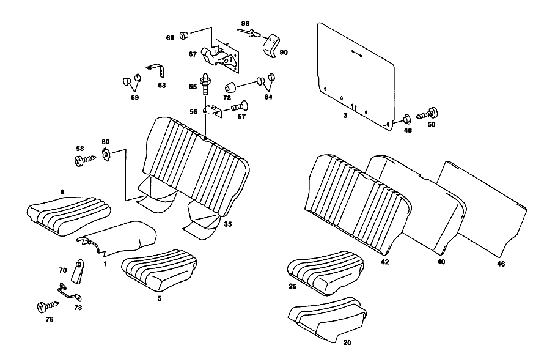

| № | Артикул | Название | Кол. | Примечание | Ограничение |
|---|---|---|---|---|---|
| 1 | A 107 680 02 07 | ПАНЕЛЬ | 1 | Z 55.856/01, Z 55.856/03 [798] UP TO CHASSIS NEW EQUIPMENT 7/75 042 000843 043 012033 044 027279 EXCEPT FOR 027268,027277 [200] FOR COLOR AND CODE NOS.,SEE PASSENGER CAR EQUIPMENT MANUL | |
| 1 | A 107 680 02 07 | ПАНЕЛЬ | 1 | Z 55.856/01, Z 55.856/03 [799] FROM CHASSIS NEW EQUIPMENT 7/75 042 000844 043 012034 044 027280 ALSO INSTALLED ON 027268,027277 [800] ДО ШАССИ НОВОЙ КОМПЛЕКТАЦИИ 9/79 042 006720 EXCEPT FOR 006341, 006410, 006449, 006450, 006710- 006719. 043 014796 EXCEPT FOR 014472,014717 044 058394 EXCEPT FOR 057628, 057973, 057975, 058211, 058260, 058280, 058284, 058289, 058296, 058297, 058305, 058324- 058348, 058350- 058369, 058371- 058392. | |
| 1 | A 107 680 02 07 | ПАНЕЛЬ | 1 | Z 55.856/01, Z 55.856/03 [801] НАЧИНАЯ С ШАССИ НОВОЙ КОМПЛЕКТАЦИИ 9/79 042 006721 ALSO INSTALLED ON 006341, 006410, 006449, 006450, 006710- 006719. 043 014797 ALSO INSTALLED ON 014472,014717 042 006721 ALSO INSTALLED ON 057628, 057973, 057975, 058211, 058260, 058280, 058284, 058289, 058296, 058297, 058305, 058324- 058348, 058350- 058369, 058371- 058392. [803] ДО ШАССИ НОВОЙ КОМПЛЕКТАЦИИ 9/82 107.042 014437 EXCEPT FOR 013925, 014092, 014199, 014271, 014344, 014386, 014404, 014408, 014410, 014411, 014414- 014416, 014420- 014436. 107.045 NOT FOR AUSTRALIA,JAPAN,SWITZERLAND 019194 EXCEPT FOR 016114, 018247, 018626, 018710, 018961. 107.045 AUSTRALIA 018398 107.045 JAPAN 018203 107.045 SWITZERLAND 019228 EXCEPT FOR 014997 107.046 002199 EXCEPT FOR 001710, 002112, 002138, 002156, 002190- 002192, 002194- 002198. | |
| 1 | A 107 680 02 07 | ПАНЕЛЬ | 1 | Z 55.856/01, Z 55.856/03 [804] НАЧИНАЯ С ШАССИ НОВОЙ КОМПЛЕКТАЦИИ 9/82 107.042 014438 ALSO INSTALLED ON 013925, 014092, 014199, 014271, 014344, 014386, 014404, 014408, 014410, 014411, 014414- 014416, 014420- 014436. 107.045 NOT FUER AUSTRALIA,JAPAN,SWITZERLAND 019195 ALSO INSTALLED ON 016114, 018247, 018626, 018710, 018961. 107.045 AUSTRALIA 018399 107.045 JAPAN 018204 107.045 SWITZERLAND 019229 ALSO INSTALLED ON 014997 107.046 002200 ALSO INSTALLED ON 001710, 002112, 002138, 002156, 002190- 002192, 002194- 002198. [805] ДО ШАССИ НОВОЙ КОМПЛЕКТАЦИИ 9/84 107 A 016566 NOT FOR AUSTRALIA,JAPAN,SWEDEN,SWITZERLAND EXCEPT FOR A 015665,A 015670,A 015691,A 015799,A 016094,A 016097,A 016263,A 016274,A 016363,A 016381,A 016387,A 016397,A 016401,A 016405, A 016408,A 016415,A 016418,A 016424,A 016427,A 016430,A 016436,A 016438,A 016443,A 016447,A 016449,A 016453,A 016459,A 016464, A 016475,A 016477,A 016480,A 016482,A 016484,A 016485,A 016487,A 016489,A 016491,A 016501,A 016504,A 016505,A 016507,A 016509, A 016511,A 016514,A 016516-A 016520,A 016525,A 016526,A 016528-A 016532,A 016534,A 016535,A 016537,A 016543. ALSO INSTALLED ON A 021354 107 AUSTRALIA A 016630 107 JAPAN A 016345 EXCEPT FOR A 015904,A 016138,A 016267,A 016292. 107 SWEDEN A 015666 EXCEPT FOR A 015491 107 SWEDEN A 015666 EXCEPT FOR A 015491 | |
| 1 | A 107 680 02 07 | ПАНЕЛЬ | 1 | Z 55.856/01, Z 55.856/03 [806] НАЧИНАЯ С ШАССИ НОВОЙ КОМПЛЕКТАЦИИ 9/84 107 A 016567 NOT FOR AUSTRALIA,JAPAN,SWEDEN,SWITZERLAND ALSO INSTALLED ON A 015665,A 015670,A 015691,A 015799,A 016094,A 016097,A 016263,A 016274,A 016363,A 016381,A 016387,A 016397,A 016401,A 016405, A 016408,A 016415,A 016418,A 016424,A 016427,A 016430,A 016436,A 016438,A 016443,A 016447,A 016449,A 016453,A 016459,A 016464, A 016475,A 016477,A 016480,A 016482,A 016484,A 016485,A 016487,A 016489,A 016491,A 016501,A 016504,A 016505,A 016507,A 016509, A 016511,A 016514,A 016516-A 016520,A 016525,A 016526,A 016528-A 016532,A 016534,A 016535,A 016537,A 016543. EXCEPT FOR A 021354 107 AUSTRALIA A 016631 107 JAPAN A 016346 ALSO INSTALLED ON A 015904,A 016138,A 016267,A 016292. 107 SCHWEDEN A 015667 AUSSERDEM EINGEBAUT IN A 015491 107 SCHWEIZ A 015898 AUSSERDEM EINGEBAUT IN A 009523 | |
| 1 | A 107 680 47 09 | ПАНЕЛЬ | 1 | Z 55.856/01, Z 55.856/03 | |
| 1 | A 107 680 03 07 | ПАНЕЛЬ | 1 | Z 55.856/02 [798] UP TO CHASSIS NEW EQUIPMENT 7/75 042 000843 043 012033 044 027279 EXCEPT FOR 027268,027277 [200] FOR COLOR AND CODE NOS.,SEE PASSENGER CAR EQUIPMENT MANUL | |
| 1 | A 107 680 03 07 | ПАНЕЛЬ | 1 | Z 55.856/02 [799] FROM CHASSIS NEW EQUIPMENT 7/75 042 000844 043 012034 044 027280 ALSO INSTALLED ON 027268,027277 [800] ДО ШАССИ НОВОЙ КОМПЛЕКТАЦИИ 9/79 042 006720 EXCEPT FOR 006341, 006410, 006449, 006450, 006710- 006719. 043 014796 EXCEPT FOR 014472,014717 044 058394 EXCEPT FOR 057628, 057973, 057975, 058211, 058260, 058280, 058284, 058289, 058296, 058297, 058305, 058324- 058348, 058350- 058369, 058371- 058392. | |
| 1 | A 107 680 03 07 | ПАНЕЛЬ | 1 | Z 55.856/02 [801] НАЧИНАЯ С ШАССИ НОВОЙ КОМПЛЕКТАЦИИ 9/79 042 006721 ALSO INSTALLED ON 006341, 006410, 006449, 006450, 006710- 006719. 043 014797 ALSO INSTALLED ON 014472,014717 042 006721 ALSO INSTALLED ON 057628, 057973, 057975, 058211, 058260, 058280, 058284, 058289, 058296, 058297, 058305, 058324- 058348, 058350- 058369, 058371- 058392. [803] ДО ШАССИ НОВОЙ КОМПЛЕКТАЦИИ 9/82 107.042 014437 EXCEPT FOR 013925, 014092, 014199, 014271, 014344, 014386, 014404, 014408, 014410, 014411, 014414- 014416, 014420- 014436. 107.045 NOT FOR AUSTRALIA,JAPAN,SWITZERLAND 019194 EXCEPT FOR 016114, 018247, 018626, 018710, 018961. 107.045 AUSTRALIA 018398 107.045 JAPAN 018203 107.045 SWITZERLAND 019228 EXCEPT FOR 014997 107.046 002199 EXCEPT FOR 001710, 002112, 002138, 002156, 002190- 002192, 002194- 002198. | |
| 1 | A 107 680 03 07 | ПАНЕЛЬ | 1 | Z 55.856/02 [804] НАЧИНАЯ С ШАССИ НОВОЙ КОМПЛЕКТАЦИИ 9/82 107.042 014438 ALSO INSTALLED ON 013925, 014092, 014199, 014271, 014344, 014386, 014404, 014408, 014410, 014411, 014414- 014416, 014420- 014436. 107.045 NOT FUER AUSTRALIA,JAPAN,SWITZERLAND 019195 ALSO INSTALLED ON 016114, 018247, 018626, 018710, 018961. 107.045 AUSTRALIA 018399 107.045 JAPAN 018204 107.045 SWITZERLAND 019229 ALSO INSTALLED ON 014997 107.046 002200 ALSO INSTALLED ON 001710, 002112, 002138, 002156, 002190- 002192, 002194- 002198. [805] ДО ШАССИ НОВОЙ КОМПЛЕКТАЦИИ 9/84 107 A 016566 NOT FOR AUSTRALIA,JAPAN,SWEDEN,SWITZERLAND EXCEPT FOR A 015665,A 015670,A 015691,A 015799,A 016094,A 016097,A 016263,A 016274,A 016363,A 016381,A 016387,A 016397,A 016401,A 016405, A 016408,A 016415,A 016418,A 016424,A 016427,A 016430,A 016436,A 016438,A 016443,A 016447,A 016449,A 016453,A 016459,A 016464, A 016475,A 016477,A 016480,A 016482,A 016484,A 016485,A 016487,A 016489,A 016491,A 016501,A 016504,A 016505,A 016507,A 016509, A 016511,A 016514,A 016516-A 016520,A 016525,A 016526,A 016528-A 016532,A 016534,A 016535,A 016537,A 016543. ALSO INSTALLED ON A 021354 107 AUSTRALIA A 016630 107 JAPAN A 016345 EXCEPT FOR A 015904,A 016138,A 016267,A 016292. 107 SWEDEN A 015666 EXCEPT FOR A 015491 107 SWEDEN A 015666 EXCEPT FOR A 015491 | |
| 1 | A 107 680 03 07 | ПАНЕЛЬ | 1 | Z 55.856/02 [806] НАЧИНАЯ С ШАССИ НОВОЙ КОМПЛЕКТАЦИИ 9/84 107 A 016567 NOT FOR AUSTRALIA,JAPAN,SWEDEN,SWITZERLAND ALSO INSTALLED ON A 015665,A 015670,A 015691,A 015799,A 016094,A 016097,A 016263,A 016274,A 016363,A 016381,A 016387,A 016397,A 016401,A 016405, A 016408,A 016415,A 016418,A 016424,A 016427,A 016430,A 016436,A 016438,A 016443,A 016447,A 016449,A 016453,A 016459,A 016464, A 016475,A 016477,A 016480,A 016482,A 016484,A 016485,A 016487,A 016489,A 016491,A 016501,A 016504,A 016505,A 016507,A 016509, A 016511,A 016514,A 016516-A 016520,A 016525,A 016526,A 016528-A 016532,A 016534,A 016535,A 016537,A 016543. EXCEPT FOR A 021354 107 AUSTRALIA A 016631 107 JAPAN A 016346 ALSO INSTALLED ON A 015904,A 016138,A 016267,A 016292. 107 SCHWEDEN A 015667 AUSSERDEM EINGEBAUT IN A 015491 107 SCHWEIZ A 015898 AUSSERDEM EINGEBAUT IN A 009523 | |
| 1 | A 107 680 48 09 | ПАНЕЛЬ | 1 | Z 55.856/02 | |
| 3 | A 107 680 00 44 | НАСТИЛ | 1 | Z 55.856/01, Z 55.856/02, Z 55.856/03 [798] UP TO CHASSIS NEW EQUIPMENT 7/75 042 000843 043 012033 044 027279 EXCEPT FOR 027268,027277 [200] FOR COLOR AND CODE NOS.,SEE PASSENGER CAR EQUIPMENT MANUL | |
| 3 | A 107 680 00 44 | НАСТИЛ | 1 | Z 55.856/01, Z 55.856/02, Z 55.856/03 [799] FROM CHASSIS NEW EQUIPMENT 7/75 042 000844 043 012034 044 027280 ALSO INSTALLED ON 027268,027277 | |
| 3 | A 107 680 14 44 | НАСТИЛ | 1 | Z 55.856/01, Z 55.856/02, Z 55.856/03 [800] ДО ШАССИ НОВОЙ КОМПЛЕКТАЦИИ 9/79 042 006720 EXCEPT FOR 006341, 006410, 006449, 006450, 006710- 006719. 043 014796 EXCEPT FOR 014472,014717 044 058394 EXCEPT FOR 057628, 057973, 057975, 058211, 058260, 058280, 058284, 058289, 058296, 058297, 058305, 058324- 058348, 058350- 058369, 058371- 058392. | |
| 3 | A 107 680 14 44 | НАСТИЛ | 1 | Z 55.856/01, Z 55.856/02, Z 55.856/03 [801] НАЧИНАЯ С ШАССИ НОВОЙ КОМПЛЕКТАЦИИ 9/79 042 006721 ALSO INSTALLED ON 006341, 006410, 006449, 006450, 006710- 006719. 043 014797 ALSO INSTALLED ON 014472,014717 042 006721 ALSO INSTALLED ON 057628, 057973, 057975, 058211, 058260, 058280, 058284, 058289, 058296, 058297, 058305, 058324- 058348, 058350- 058369, 058371- 058392. [803] ДО ШАССИ НОВОЙ КОМПЛЕКТАЦИИ 9/82 107.042 014437 EXCEPT FOR 013925, 014092, 014199, 014271, 014344, 014386, 014404, 014408, 014410, 014411, 014414- 014416, 014420- 014436. 107.045 NOT FOR AUSTRALIA,JAPAN,SWITZERLAND 019194 EXCEPT FOR 016114, 018247, 018626, 018710, 018961. 107.045 AUSTRALIA 018398 107.045 JAPAN 018203 107.045 SWITZERLAND 019228 EXCEPT FOR 014997 107.046 002199 EXCEPT FOR 001710, 002112, 002138, 002156, 002190- 002192, 002194- 002198. | |
| 3 | A 107 680 14 44 | НАСТИЛ | 1 | Z 55.856/01, Z 55.856/02, Z 55.856/03 [804] НАЧИНАЯ С ШАССИ НОВОЙ КОМПЛЕКТАЦИИ 9/82 107.042 014438 ALSO INSTALLED ON 013925, 014092, 014199, 014271, 014344, 014386, 014404, 014408, 014410, 014411, 014414- 014416, 014420- 014436. 107.045 NOT FUER AUSTRALIA,JAPAN,SWITZERLAND 019195 ALSO INSTALLED ON 016114, 018247, 018626, 018710, 018961. 107.045 AUSTRALIA 018399 107.045 JAPAN 018204 107.045 SWITZERLAND 019229 ALSO INSTALLED ON 014997 107.046 002200 ALSO INSTALLED ON 001710, 002112, 002138, 002156, 002190- 002192, 002194- 002198. [805] ДО ШАССИ НОВОЙ КОМПЛЕКТАЦИИ 9/84 107 A 016566 NOT FOR AUSTRALIA,JAPAN,SWEDEN,SWITZERLAND EXCEPT FOR A 015665,A 015670,A 015691,A 015799,A 016094,A 016097,A 016263,A 016274,A 016363,A 016381,A 016387,A 016397,A 016401,A 016405, A 016408,A 016415,A 016418,A 016424,A 016427,A 016430,A 016436,A 016438,A 016443,A 016447,A 016449,A 016453,A 016459,A 016464, A 016475,A 016477,A 016480,A 016482,A 016484,A 016485,A 016487,A 016489,A 016491,A 016501,A 016504,A 016505,A 016507,A 016509, A 016511,A 016514,A 016516-A 016520,A 016525,A 016526,A 016528-A 016532,A 016534,A 016535,A 016537,A 016543. ALSO INSTALLED ON A 021354 107 AUSTRALIA A 016630 107 JAPAN A 016345 EXCEPT FOR A 015904,A 016138,A 016267,A 016292. 107 SWEDEN A 015666 EXCEPT FOR A 015491 107 SWEDEN A 015666 EXCEPT FOR A 015491 | |
| 3 | A 107 680 14 44 | НАСТИЛ | 1 | Z 55.856/01, Z 55.856/02, Z 55.856/03 [806] НАЧИНАЯ С ШАССИ НОВОЙ КОМПЛЕКТАЦИИ 9/84 107 A 016567 NOT FOR AUSTRALIA,JAPAN,SWEDEN,SWITZERLAND ALSO INSTALLED ON A 015665,A 015670,A 015691,A 015799,A 016094,A 016097,A 016263,A 016274,A 016363,A 016381,A 016387,A 016397,A 016401,A 016405, A 016408,A 016415,A 016418,A 016424,A 016427,A 016430,A 016436,A 016438,A 016443,A 016447,A 016449,A 016453,A 016459,A 016464, A 016475,A 016477,A 016480,A 016482,A 016484,A 016485,A 016487,A 016489,A 016491,A 016501,A 016504,A 016505,A 016507,A 016509, A 016511,A 016514,A 016516-A 016520,A 016525,A 016526,A 016528-A 016532,A 016534,A 016535,A 016537,A 016543. EXCEPT FOR A 021354 107 AUSTRALIA A 016631 107 JAPAN A 016346 ALSO INSTALLED ON A 015904,A 016138,A 016267,A 016292. 107 SCHWEDEN A 015667 AUSSERDEM EINGEBAUT IN A 015491 107 SCHWEIZ A 015898 AUSSERDEM EINGEBAUT IN A 009523 | |
| 5 | A 107 920 01 20 | ПОДУШКИ ЗАДНИХ СИДЕНИЙ | 1 | ИСК. КОЖА; СЛЕВА Z 55.856/01 [798] UP TO CHASSIS NEW EQUIPMENT 7/75 042 000843 043 012033 044 027279 EXCEPT FOR 027268,027277 [200] FOR COLOR AND CODE NOS.,SEE PASSENGER CAR EQUIPMENT MANUL [402] БОЛЬШЕ НЕ ПОСТАВЛЯЕТСЯ | |
| 5 | A 107 920 01 20 | ПОДУШКИ ЗАДНИХ СИДЕНИЙ | 1 | Z 55.856/01 [799] FROM CHASSIS NEW EQUIPMENT 7/75 042 000844 043 012034 044 027280 ALSO INSTALLED ON 027268,027277 [800] ДО ШАССИ НОВОЙ КОМПЛЕКТАЦИИ 9/79 042 006720 EXCEPT FOR 006341, 006410, 006449, 006450, 006710- 006719. 043 014796 EXCEPT FOR 014472,014717 044 058394 EXCEPT FOR 057628, 057973, 057975, 058211, 058260, 058280, 058284, 058289, 058296, 058297, 058305, 058324- 058348, 058350- 058369, 058371- 058392. [402] БОЛЬШЕ НЕ ПОСТАВЛЯЕТСЯ | |
| 5 | A 107 920 01 20 | ПОДУШКИ ЗАДНИХ СИДЕНИЙ | 1 | Z 55.856/01 [801] НАЧИНАЯ С ШАССИ НОВОЙ КОМПЛЕКТАЦИИ 9/79 042 006721 ALSO INSTALLED ON 006341, 006410, 006449, 006450, 006710- 006719. 043 014797 ALSO INSTALLED ON 014472,014717 042 006721 ALSO INSTALLED ON 057628, 057973, 057975, 058211, 058260, 058280, 058284, 058289, 058296, 058297, 058305, 058324- 058348, 058350- 058369, 058371- 058392. [803] ДО ШАССИ НОВОЙ КОМПЛЕКТАЦИИ 9/82 107.042 014437 EXCEPT FOR 013925, 014092, 014199, 014271, 014344, 014386, 014404, 014408, 014410, 014411, 014414- 014416, 014420- 014436. 107.045 NOT FOR AUSTRALIA,JAPAN,SWITZERLAND 019194 EXCEPT FOR 016114, 018247, 018626, 018710, 018961. 107.045 AUSTRALIA 018398 107.045 JAPAN 018203 107.045 SWITZERLAND 019228 EXCEPT FOR 014997 107.046 002199 EXCEPT FOR 001710, 002112, 002138, 002156, 002190- 002192, 002194- 002198. [402] БОЛЬШЕ НЕ ПОСТАВЛЯЕТСЯ | |
| 5 | A 107 920 01 20 | ПОДУШКИ ЗАДНИХ СИДЕНИЙ | 1 | Z 55.856/01 [804] НАЧИНАЯ С ШАССИ НОВОЙ КОМПЛЕКТАЦИИ 9/82 107.042 014438 ALSO INSTALLED ON 013925, 014092, 014199, 014271, 014344, 014386, 014404, 014408, 014410, 014411, 014414- 014416, 014420- 014436. 107.045 NOT FUER AUSTRALIA,JAPAN,SWITZERLAND 019195 ALSO INSTALLED ON 016114, 018247, 018626, 018710, 018961. 107.045 AUSTRALIA 018399 107.045 JAPAN 018204 107.045 SWITZERLAND 019229 ALSO INSTALLED ON 014997 107.046 002200 ALSO INSTALLED ON 001710, 002112, 002138, 002156, 002190- 002192, 002194- 002198. [805] ДО ШАССИ НОВОЙ КОМПЛЕКТАЦИИ 9/84 107 A 016566 NOT FOR AUSTRALIA,JAPAN,SWEDEN,SWITZERLAND EXCEPT FOR A 015665,A 015670,A 015691,A 015799,A 016094,A 016097,A 016263,A 016274,A 016363,A 016381,A 016387,A 016397,A 016401,A 016405, A 016408,A 016415,A 016418,A 016424,A 016427,A 016430,A 016436,A 016438,A 016443,A 016447,A 016449,A 016453,A 016459,A 016464, A 016475,A 016477,A 016480,A 016482,A 016484,A 016485,A 016487,A 016489,A 016491,A 016501,A 016504,A 016505,A 016507,A 016509, A 016511,A 016514,A 016516-A 016520,A 016525,A 016526,A 016528-A 016532,A 016534,A 016535,A 016537,A 016543. ALSO INSTALLED ON A 021354 107 AUSTRALIA A 016630 107 JAPAN A 016345 EXCEPT FOR A 015904,A 016138,A 016267,A 016292. 107 SWEDEN A 015666 EXCEPT FOR A 015491 107 SWEDEN A 015666 EXCEPT FOR A 015491 [402] БОЛЬШЕ НЕ ПОСТАВЛЯЕТСЯ | |
| 5 | A 107 920 01 20 | ПОДУШКИ ЗАДНИХ СИДЕНИЙ | 1 | Z 55.856/01 [806] НАЧИНАЯ С ШАССИ НОВОЙ КОМПЛЕКТАЦИИ 9/84 107 A 016567 NOT FOR AUSTRALIA,JAPAN,SWEDEN,SWITZERLAND ALSO INSTALLED ON A 015665,A 015670,A 015691,A 015799,A 016094,A 016097,A 016263,A 016274,A 016363,A 016381,A 016387,A 016397,A 016401,A 016405, A 016408,A 016415,A 016418,A 016424,A 016427,A 016430,A 016436,A 016438,A 016443,A 016447,A 016449,A 016453,A 016459,A 016464, A 016475,A 016477,A 016480,A 016482,A 016484,A 016485,A 016487,A 016489,A 016491,A 016501,A 016504,A 016505,A 016507,A 016509, A 016511,A 016514,A 016516-A 016520,A 016525,A 016526,A 016528-A 016532,A 016534,A 016535,A 016537,A 016543. EXCEPT FOR A 021354 107 AUSTRALIA A 016631 107 JAPAN A 016346 ALSO INSTALLED ON A 015904,A 016138,A 016267,A 016292. 107 SCHWEDEN A 015667 AUSSERDEM EINGEBAUT IN A 015491 107 SCHWEIZ A 015898 AUSSERDEM EINGEBAUT IN A 009523 [402] БОЛЬШЕ НЕ ПОСТАВЛЯЕТСЯ | |
| 5 | A 107 920 15 20 | ПОДУШКИ ЗАДНИХ СИДЕНИЙ | 1 | ИСК. КОЖА; СЛЕВА Z 55.856/01 | |
| 5 | A 107 920 03 20 | ПОДУШКИ ЗАДНИХ СИДЕНИЙ | 1 | КОЖА, СЛЕВА Z 55.856/02 [798] UP TO CHASSIS NEW EQUIPMENT 7/75 042 000843 043 012033 044 027279 EXCEPT FOR 027268,027277 [200] FOR COLOR AND CODE NOS.,SEE PASSENGER CAR EQUIPMENT MANUL [402] БОЛЬШЕ НЕ ПОСТАВЛЯЕТСЯ | |
| 5 | A 107 920 03 20 | ПОДУШКИ ЗАДНИХ СИДЕНИЙ | 1 | Z 55.856/02 [799] FROM CHASSIS NEW EQUIPMENT 7/75 042 000844 043 012034 044 027280 ALSO INSTALLED ON 027268,027277 [800] ДО ШАССИ НОВОЙ КОМПЛЕКТАЦИИ 9/79 042 006720 EXCEPT FOR 006341, 006410, 006449, 006450, 006710- 006719. 043 014796 EXCEPT FOR 014472,014717 044 058394 EXCEPT FOR 057628, 057973, 057975, 058211, 058260, 058280, 058284, 058289, 058296, 058297, 058305, 058324- 058348, 058350- 058369, 058371- 058392. [402] БОЛЬШЕ НЕ ПОСТАВЛЯЕТСЯ | |
| 5 | A 107 920 03 20 | ПОДУШКИ ЗАДНИХ СИДЕНИЙ | 1 | Z 55.856/02 [801] НАЧИНАЯ С ШАССИ НОВОЙ КОМПЛЕКТАЦИИ 9/79 042 006721 ALSO INSTALLED ON 006341, 006410, 006449, 006450, 006710- 006719. 043 014797 ALSO INSTALLED ON 014472,014717 042 006721 ALSO INSTALLED ON 057628, 057973, 057975, 058211, 058260, 058280, 058284, 058289, 058296, 058297, 058305, 058324- 058348, 058350- 058369, 058371- 058392. [803] ДО ШАССИ НОВОЙ КОМПЛЕКТАЦИИ 9/82 107.042 014437 EXCEPT FOR 013925, 014092, 014199, 014271, 014344, 014386, 014404, 014408, 014410, 014411, 014414- 014416, 014420- 014436. 107.045 NOT FOR AUSTRALIA,JAPAN,SWITZERLAND 019194 EXCEPT FOR 016114, 018247, 018626, 018710, 018961. 107.045 AUSTRALIA 018398 107.045 JAPAN 018203 107.045 SWITZERLAND 019228 EXCEPT FOR 014997 107.046 002199 EXCEPT FOR 001710, 002112, 002138, 002156, 002190- 002192, 002194- 002198. [402] БОЛЬШЕ НЕ ПОСТАВЛЯЕТСЯ | |
| 5 | A 107 920 03 20 | ПОДУШКИ ЗАДНИХ СИДЕНИЙ | 1 | Z 55.856/02 [804] НАЧИНАЯ С ШАССИ НОВОЙ КОМПЛЕКТАЦИИ 9/82 107.042 014438 ALSO INSTALLED ON 013925, 014092, 014199, 014271, 014344, 014386, 014404, 014408, 014410, 014411, 014414- 014416, 014420- 014436. 107.045 NOT FUER AUSTRALIA,JAPAN,SWITZERLAND 019195 ALSO INSTALLED ON 016114, 018247, 018626, 018710, 018961. 107.045 AUSTRALIA 018399 107.045 JAPAN 018204 107.045 SWITZERLAND 019229 ALSO INSTALLED ON 014997 107.046 002200 ALSO INSTALLED ON 001710, 002112, 002138, 002156, 002190- 002192, 002194- 002198. [805] ДО ШАССИ НОВОЙ КОМПЛЕКТАЦИИ 9/84 107 A 016566 NOT FOR AUSTRALIA,JAPAN,SWEDEN,SWITZERLAND EXCEPT FOR A 015665,A 015670,A 015691,A 015799,A 016094,A 016097,A 016263,A 016274,A 016363,A 016381,A 016387,A 016397,A 016401,A 016405, A 016408,A 016415,A 016418,A 016424,A 016427,A 016430,A 016436,A 016438,A 016443,A 016447,A 016449,A 016453,A 016459,A 016464, A 016475,A 016477,A 016480,A 016482,A 016484,A 016485,A 016487,A 016489,A 016491,A 016501,A 016504,A 016505,A 016507,A 016509, A 016511,A 016514,A 016516-A 016520,A 016525,A 016526,A 016528-A 016532,A 016534,A 016535,A 016537,A 016543. ALSO INSTALLED ON A 021354 107 AUSTRALIA A 016630 107 JAPAN A 016345 EXCEPT FOR A 015904,A 016138,A 016267,A 016292. 107 SWEDEN A 015666 EXCEPT FOR A 015491 107 SWEDEN A 015666 EXCEPT FOR A 015491 [402] БОЛЬШЕ НЕ ПОСТАВЛЯЕТСЯ | |
| 5 | A 107 920 03 20 | ПОДУШКИ ЗАДНИХ СИДЕНИЙ | 1 | Z 55.856/02 [806] НАЧИНАЯ С ШАССИ НОВОЙ КОМПЛЕКТАЦИИ 9/84 107 A 016567 NOT FOR AUSTRALIA,JAPAN,SWEDEN,SWITZERLAND ALSO INSTALLED ON A 015665,A 015670,A 015691,A 015799,A 016094,A 016097,A 016263,A 016274,A 016363,A 016381,A 016387,A 016397,A 016401,A 016405, A 016408,A 016415,A 016418,A 016424,A 016427,A 016430,A 016436,A 016438,A 016443,A 016447,A 016449,A 016453,A 016459,A 016464, A 016475,A 016477,A 016480,A 016482,A 016484,A 016485,A 016487,A 016489,A 016491,A 016501,A 016504,A 016505,A 016507,A 016509, A 016511,A 016514,A 016516-A 016520,A 016525,A 016526,A 016528-A 016532,A 016534,A 016535,A 016537,A 016543. EXCEPT FOR A 021354 107 AUSTRALIA A 016631 107 JAPAN A 016346 ALSO INSTALLED ON A 015904,A 016138,A 016267,A 016292. 107 SCHWEDEN A 015667 AUSSERDEM EINGEBAUT IN A 015491 107 SCHWEIZ A 015898 AUSSERDEM EINGEBAUT IN A 009523 [402] БОЛЬШЕ НЕ ПОСТАВЛЯЕТСЯ | |
| 5 | A 107 920 17 20 | ПОДУШКИ ЗАДНИХ СИДЕНИЙ | 1 | КОЖА, СЛЕВА Z 55.856/02 | |
| 5 | A 107 920 05 20 | ПОДУШКИ ЗАДНИХ СИДЕНИЙ | 1 | FABRIC; LEFT Z 55.856/03 [798] UP TO CHASSIS NEW EQUIPMENT 7/75 042 000843 043 012033 044 027279 EXCEPT FOR 027268,027277 [200] FOR COLOR AND CODE NOS.,SEE PASSENGER CAR EQUIPMENT MANUL [402] БОЛЬШЕ НЕ ПОСТАВЛЯЕТСЯ | |
| 5 | A 107 920 05 20 | ПОДУШКИ ЗАДНИХ СИДЕНИЙ | 1 | Z 55.856/03 [799] FROM CHASSIS NEW EQUIPMENT 7/75 042 000844 043 012034 044 027280 ALSO INSTALLED ON 027268,027277 [800] ДО ШАССИ НОВОЙ КОМПЛЕКТАЦИИ 9/79 042 006720 EXCEPT FOR 006341, 006410, 006449, 006450, 006710- 006719. 043 014796 EXCEPT FOR 014472,014717 044 058394 EXCEPT FOR 057628, 057973, 057975, 058211, 058260, 058280, 058284, 058289, 058296, 058297, 058305, 058324- 058348, 058350- 058369, 058371- 058392. [402] БОЛЬШЕ НЕ ПОСТАВЛЯЕТСЯ | |
| 5 | A 107 920 05 20 | ПОДУШКИ ЗАДНИХ СИДЕНИЙ | 1 | Z 55.856/03 [801] НАЧИНАЯ С ШАССИ НОВОЙ КОМПЛЕКТАЦИИ 9/79 042 006721 ALSO INSTALLED ON 006341, 006410, 006449, 006450, 006710- 006719. 043 014797 ALSO INSTALLED ON 014472,014717 042 006721 ALSO INSTALLED ON 057628, 057973, 057975, 058211, 058260, 058280, 058284, 058289, 058296, 058297, 058305, 058324- 058348, 058350- 058369, 058371- 058392. [803] ДО ШАССИ НОВОЙ КОМПЛЕКТАЦИИ 9/82 107.042 014437 EXCEPT FOR 013925, 014092, 014199, 014271, 014344, 014386, 014404, 014408, 014410, 014411, 014414- 014416, 014420- 014436. 107.045 NOT FOR AUSTRALIA,JAPAN,SWITZERLAND 019194 EXCEPT FOR 016114, 018247, 018626, 018710, 018961. 107.045 AUSTRALIA 018398 107.045 JAPAN 018203 107.045 SWITZERLAND 019228 EXCEPT FOR 014997 107.046 002199 EXCEPT FOR 001710, 002112, 002138, 002156, 002190- 002192, 002194- 002198. [402] БОЛЬШЕ НЕ ПОСТАВЛЯЕТСЯ | |
| 5 | A 107 920 05 20 | ПОДУШКИ ЗАДНИХ СИДЕНИЙ | 1 | Z 55.856/03 [804] НАЧИНАЯ С ШАССИ НОВОЙ КОМПЛЕКТАЦИИ 9/82 107.042 014438 ALSO INSTALLED ON 013925, 014092, 014199, 014271, 014344, 014386, 014404, 014408, 014410, 014411, 014414- 014416, 014420- 014436. 107.045 NOT FUER AUSTRALIA,JAPAN,SWITZERLAND 019195 ALSO INSTALLED ON 016114, 018247, 018626, 018710, 018961. 107.045 AUSTRALIA 018399 107.045 JAPAN 018204 107.045 SWITZERLAND 019229 ALSO INSTALLED ON 014997 107.046 002200 ALSO INSTALLED ON 001710, 002112, 002138, 002156, 002190- 002192, 002194- 002198. [805] ДО ШАССИ НОВОЙ КОМПЛЕКТАЦИИ 9/84 107 A 016566 NOT FOR AUSTRALIA,JAPAN,SWEDEN,SWITZERLAND EXCEPT FOR A 015665,A 015670,A 015691,A 015799,A 016094,A 016097,A 016263,A 016274,A 016363,A 016381,A 016387,A 016397,A 016401,A 016405, A 016408,A 016415,A 016418,A 016424,A 016427,A 016430,A 016436,A 016438,A 016443,A 016447,A 016449,A 016453,A 016459,A 016464, A 016475,A 016477,A 016480,A 016482,A 016484,A 016485,A 016487,A 016489,A 016491,A 016501,A 016504,A 016505,A 016507,A 016509, A 016511,A 016514,A 016516-A 016520,A 016525,A 016526,A 016528-A 016532,A 016534,A 016535,A 016537,A 016543. ALSO INSTALLED ON A 021354 107 AUSTRALIA A 016630 107 JAPAN A 016345 EXCEPT FOR A 015904,A 016138,A 016267,A 016292. 107 SWEDEN A 015666 EXCEPT FOR A 015491 107 SWEDEN A 015666 EXCEPT FOR A 015491 [402] БОЛЬШЕ НЕ ПОСТАВЛЯЕТСЯ | |
| 5 | A 107 920 05 20 | ПОДУШКИ ЗАДНИХ СИДЕНИЙ | 1 | Z 55.856/03 [806] НАЧИНАЯ С ШАССИ НОВОЙ КОМПЛЕКТАЦИИ 9/84 107 A 016567 NOT FOR AUSTRALIA,JAPAN,SWEDEN,SWITZERLAND ALSO INSTALLED ON A 015665,A 015670,A 015691,A 015799,A 016094,A 016097,A 016263,A 016274,A 016363,A 016381,A 016387,A 016397,A 016401,A 016405, A 016408,A 016415,A 016418,A 016424,A 016427,A 016430,A 016436,A 016438,A 016443,A 016447,A 016449,A 016453,A 016459,A 016464, A 016475,A 016477,A 016480,A 016482,A 016484,A 016485,A 016487,A 016489,A 016491,A 016501,A 016504,A 016505,A 016507,A 016509, A 016511,A 016514,A 016516-A 016520,A 016525,A 016526,A 016528-A 016532,A 016534,A 016535,A 016537,A 016543. EXCEPT FOR A 021354 107 AUSTRALIA A 016631 107 JAPAN A 016346 ALSO INSTALLED ON A 015904,A 016138,A 016267,A 016292. 107 SCHWEDEN A 015667 AUSSERDEM EINGEBAUT IN A 015491 107 SCHWEIZ A 015898 AUSSERDEM EINGEBAUT IN A 009523 [402] БОЛЬШЕ НЕ ПОСТАВЛЯЕТСЯ | |
| 5 | A 107 920 19 20 | ПОДУШКИ ЗАДНИХ СИДЕНИЙ | 1 | FABRIC; LEFT Z 55.856/03 | |
| 8 | A 107 920 02 20 | ПОДУШКИ ЗАДНИХ СИДЕНИЙ | 1 | ИСКУССТ.КОЖА;СПРАВА Z 55.856/01 [798] UP TO CHASSIS NEW EQUIPMENT 7/75 042 000843 043 012033 044 027279 EXCEPT FOR 027268,027277 [200] FOR COLOR AND CODE NOS.,SEE PASSENGER CAR EQUIPMENT MANUL [402] БОЛЬШЕ НЕ ПОСТАВЛЯЕТСЯ | |
| 8 | A 107 920 02 20 | ПОДУШКИ ЗАДНИХ СИДЕНИЙ | 1 | Z 55.856/01 [799] FROM CHASSIS NEW EQUIPMENT 7/75 042 000844 043 012034 044 027280 ALSO INSTALLED ON 027268,027277 [800] ДО ШАССИ НОВОЙ КОМПЛЕКТАЦИИ 9/79 042 006720 EXCEPT FOR 006341, 006410, 006449, 006450, 006710- 006719. 043 014796 EXCEPT FOR 014472,014717 044 058394 EXCEPT FOR 057628, 057973, 057975, 058211, 058260, 058280, 058284, 058289, 058296, 058297, 058305, 058324- 058348, 058350- 058369, 058371- 058392. [402] БОЛЬШЕ НЕ ПОСТАВЛЯЕТСЯ | |
| 8 | A 107 920 02 20 | ПОДУШКИ ЗАДНИХ СИДЕНИЙ | 1 | Z 55.856/01 [801] НАЧИНАЯ С ШАССИ НОВОЙ КОМПЛЕКТАЦИИ 9/79 042 006721 ALSO INSTALLED ON 006341, 006410, 006449, 006450, 006710- 006719. 043 014797 ALSO INSTALLED ON 014472,014717 042 006721 ALSO INSTALLED ON 057628, 057973, 057975, 058211, 058260, 058280, 058284, 058289, 058296, 058297, 058305, 058324- 058348, 058350- 058369, 058371- 058392. [803] ДО ШАССИ НОВОЙ КОМПЛЕКТАЦИИ 9/82 107.042 014437 EXCEPT FOR 013925, 014092, 014199, 014271, 014344, 014386, 014404, 014408, 014410, 014411, 014414- 014416, 014420- 014436. 107.045 NOT FOR AUSTRALIA,JAPAN,SWITZERLAND 019194 EXCEPT FOR 016114, 018247, 018626, 018710, 018961. 107.045 AUSTRALIA 018398 107.045 JAPAN 018203 107.045 SWITZERLAND 019228 EXCEPT FOR 014997 107.046 002199 EXCEPT FOR 001710, 002112, 002138, 002156, 002190- 002192, 002194- 002198. [402] БОЛЬШЕ НЕ ПОСТАВЛЯЕТСЯ | |
| 8 | A 107 920 02 20 | ПОДУШКИ ЗАДНИХ СИДЕНИЙ | 1 | Z 55.856/01 [804] НАЧИНАЯ С ШАССИ НОВОЙ КОМПЛЕКТАЦИИ 9/82 107.042 014438 ALSO INSTALLED ON 013925, 014092, 014199, 014271, 014344, 014386, 014404, 014408, 014410, 014411, 014414- 014416, 014420- 014436. 107.045 NOT FUER AUSTRALIA,JAPAN,SWITZERLAND 019195 ALSO INSTALLED ON 016114, 018247, 018626, 018710, 018961. 107.045 AUSTRALIA 018399 107.045 JAPAN 018204 107.045 SWITZERLAND 019229 ALSO INSTALLED ON 014997 107.046 002200 ALSO INSTALLED ON 001710, 002112, 002138, 002156, 002190- 002192, 002194- 002198. [805] ДО ШАССИ НОВОЙ КОМПЛЕКТАЦИИ 9/84 107 A 016566 NOT FOR AUSTRALIA,JAPAN,SWEDEN,SWITZERLAND EXCEPT FOR A 015665,A 015670,A 015691,A 015799,A 016094,A 016097,A 016263,A 016274,A 016363,A 016381,A 016387,A 016397,A 016401,A 016405, A 016408,A 016415,A 016418,A 016424,A 016427,A 016430,A 016436,A 016438,A 016443,A 016447,A 016449,A 016453,A 016459,A 016464, A 016475,A 016477,A 016480,A 016482,A 016484,A 016485,A 016487,A 016489,A 016491,A 016501,A 016504,A 016505,A 016507,A 016509, A 016511,A 016514,A 016516-A 016520,A 016525,A 016526,A 016528-A 016532,A 016534,A 016535,A 016537,A 016543. ALSO INSTALLED ON A 021354 107 AUSTRALIA A 016630 107 JAPAN A 016345 EXCEPT FOR A 015904,A 016138,A 016267,A 016292. 107 SWEDEN A 015666 EXCEPT FOR A 015491 107 SWEDEN A 015666 EXCEPT FOR A 015491 [402] БОЛЬШЕ НЕ ПОСТАВЛЯЕТСЯ | |
| 8 | A 107 920 02 20 | ПОДУШКИ ЗАДНИХ СИДЕНИЙ | 1 | Z 55.856/01 [806] НАЧИНАЯ С ШАССИ НОВОЙ КОМПЛЕКТАЦИИ 9/84 107 A 016567 NOT FOR AUSTRALIA,JAPAN,SWEDEN,SWITZERLAND ALSO INSTALLED ON A 015665,A 015670,A 015691,A 015799,A 016094,A 016097,A 016263,A 016274,A 016363,A 016381,A 016387,A 016397,A 016401,A 016405, A 016408,A 016415,A 016418,A 016424,A 016427,A 016430,A 016436,A 016438,A 016443,A 016447,A 016449,A 016453,A 016459,A 016464, A 016475,A 016477,A 016480,A 016482,A 016484,A 016485,A 016487,A 016489,A 016491,A 016501,A 016504,A 016505,A 016507,A 016509, A 016511,A 016514,A 016516-A 016520,A 016525,A 016526,A 016528-A 016532,A 016534,A 016535,A 016537,A 016543. EXCEPT FOR A 021354 107 AUSTRALIA A 016631 107 JAPAN A 016346 ALSO INSTALLED ON A 015904,A 016138,A 016267,A 016292. 107 SCHWEDEN A 015667 AUSSERDEM EINGEBAUT IN A 015491 107 SCHWEIZ A 015898 AUSSERDEM EINGEBAUT IN A 009523 [402] БОЛЬШЕ НЕ ПОСТАВЛЯЕТСЯ | |
| 8 | A 107 920 16 20 | ПОДУШКИ ЗАДНИХ СИДЕНИЙ | 1 | ИСКУССТ.КОЖА;СПРАВА Z 55.856/01 | |
| 8 | A 107 920 04 20 | ПОДУШКИ ЗАДНИХ СИДЕНИЙ | 1 | КОЖА; СПРАВА Z 55.856/02 [798] UP TO CHASSIS NEW EQUIPMENT 7/75 042 000843 043 012033 044 027279 EXCEPT FOR 027268,027277 [200] FOR COLOR AND CODE NOS.,SEE PASSENGER CAR EQUIPMENT MANUL [402] БОЛЬШЕ НЕ ПОСТАВЛЯЕТСЯ | |
| 8 | A 107 920 04 20 | ПОДУШКИ ЗАДНИХ СИДЕНИЙ | 1 | Z 55.856/02 [799] FROM CHASSIS NEW EQUIPMENT 7/75 042 000844 043 012034 044 027280 ALSO INSTALLED ON 027268,027277 [800] ДО ШАССИ НОВОЙ КОМПЛЕКТАЦИИ 9/79 042 006720 EXCEPT FOR 006341, 006410, 006449, 006450, 006710- 006719. 043 014796 EXCEPT FOR 014472,014717 044 058394 EXCEPT FOR 057628, 057973, 057975, 058211, 058260, 058280, 058284, 058289, 058296, 058297, 058305, 058324- 058348, 058350- 058369, 058371- 058392. [402] БОЛЬШЕ НЕ ПОСТАВЛЯЕТСЯ | |
| 8 | A 107 920 04 20 | ПОДУШКИ ЗАДНИХ СИДЕНИЙ | 1 | Z 55.856/02 [801] НАЧИНАЯ С ШАССИ НОВОЙ КОМПЛЕКТАЦИИ 9/79 042 006721 ALSO INSTALLED ON 006341, 006410, 006449, 006450, 006710- 006719. 043 014797 ALSO INSTALLED ON 014472,014717 042 006721 ALSO INSTALLED ON 057628, 057973, 057975, 058211, 058260, 058280, 058284, 058289, 058296, 058297, 058305, 058324- 058348, 058350- 058369, 058371- 058392. [803] ДО ШАССИ НОВОЙ КОМПЛЕКТАЦИИ 9/82 107.042 014437 EXCEPT FOR 013925, 014092, 014199, 014271, 014344, 014386, 014404, 014408, 014410, 014411, 014414- 014416, 014420- 014436. 107.045 NOT FOR AUSTRALIA,JAPAN,SWITZERLAND 019194 EXCEPT FOR 016114, 018247, 018626, 018710, 018961. 107.045 AUSTRALIA 018398 107.045 JAPAN 018203 107.045 SWITZERLAND 019228 EXCEPT FOR 014997 107.046 002199 EXCEPT FOR 001710, 002112, 002138, 002156, 002190- 002192, 002194- 002198. [402] БОЛЬШЕ НЕ ПОСТАВЛЯЕТСЯ | |
| 8 | A 107 920 04 20 | ПОДУШКИ ЗАДНИХ СИДЕНИЙ | 1 | Z 55.856/02 [804] НАЧИНАЯ С ШАССИ НОВОЙ КОМПЛЕКТАЦИИ 9/82 107.042 014438 ALSO INSTALLED ON 013925, 014092, 014199, 014271, 014344, 014386, 014404, 014408, 014410, 014411, 014414- 014416, 014420- 014436. 107.045 NOT FUER AUSTRALIA,JAPAN,SWITZERLAND 019195 ALSO INSTALLED ON 016114, 018247, 018626, 018710, 018961. 107.045 AUSTRALIA 018399 107.045 JAPAN 018204 107.045 SWITZERLAND 019229 ALSO INSTALLED ON 014997 107.046 002200 ALSO INSTALLED ON 001710, 002112, 002138, 002156, 002190- 002192, 002194- 002198. [805] ДО ШАССИ НОВОЙ КОМПЛЕКТАЦИИ 9/84 107 A 016566 NOT FOR AUSTRALIA,JAPAN,SWEDEN,SWITZERLAND EXCEPT FOR A 015665,A 015670,A 015691,A 015799,A 016094,A 016097,A 016263,A 016274,A 016363,A 016381,A 016387,A 016397,A 016401,A 016405, A 016408,A 016415,A 016418,A 016424,A 016427,A 016430,A 016436,A 016438,A 016443,A 016447,A 016449,A 016453,A 016459,A 016464, A 016475,A 016477,A 016480,A 016482,A 016484,A 016485,A 016487,A 016489,A 016491,A 016501,A 016504,A 016505,A 016507,A 016509, A 016511,A 016514,A 016516-A 016520,A 016525,A 016526,A 016528-A 016532,A 016534,A 016535,A 016537,A 016543. ALSO INSTALLED ON A 021354 107 AUSTRALIA A 016630 107 JAPAN A 016345 EXCEPT FOR A 015904,A 016138,A 016267,A 016292. 107 SWEDEN A 015666 EXCEPT FOR A 015491 107 SWEDEN A 015666 EXCEPT FOR A 015491 [402] БОЛЬШЕ НЕ ПОСТАВЛЯЕТСЯ | |
| 8 | A 107 920 04 20 | ПОДУШКИ ЗАДНИХ СИДЕНИЙ | 1 | Z 55.856/02 [806] НАЧИНАЯ С ШАССИ НОВОЙ КОМПЛЕКТАЦИИ 9/84 107 A 016567 NOT FOR AUSTRALIA,JAPAN,SWEDEN,SWITZERLAND ALSO INSTALLED ON A 015665,A 015670,A 015691,A 015799,A 016094,A 016097,A 016263,A 016274,A 016363,A 016381,A 016387,A 016397,A 016401,A 016405, A 016408,A 016415,A 016418,A 016424,A 016427,A 016430,A 016436,A 016438,A 016443,A 016447,A 016449,A 016453,A 016459,A 016464, A 016475,A 016477,A 016480,A 016482,A 016484,A 016485,A 016487,A 016489,A 016491,A 016501,A 016504,A 016505,A 016507,A 016509, A 016511,A 016514,A 016516-A 016520,A 016525,A 016526,A 016528-A 016532,A 016534,A 016535,A 016537,A 016543. EXCEPT FOR A 021354 107 AUSTRALIA A 016631 107 JAPAN A 016346 ALSO INSTALLED ON A 015904,A 016138,A 016267,A 016292. 107 SCHWEDEN A 015667 AUSSERDEM EINGEBAUT IN A 015491 107 SCHWEIZ A 015898 AUSSERDEM EINGEBAUT IN A 009523 [402] БОЛЬШЕ НЕ ПОСТАВЛЯЕТСЯ | |
| 8 | A 107 920 18 20 | ПОДУШКИ ЗАДНИХ СИДЕНИЙ | 1 | КОЖА; СПРАВА Z 55.856/02 | |
| 8 | A 107 920 06 20 | ПОДУШКИ ЗАДНИХ СИДЕНИЙ | 1 | FABRIC; RIGHT Z 55.856/03 [798] UP TO CHASSIS NEW EQUIPMENT 7/75 042 000843 043 012033 044 027279 EXCEPT FOR 027268,027277 [200] FOR COLOR AND CODE NOS.,SEE PASSENGER CAR EQUIPMENT MANUL [402] БОЛЬШЕ НЕ ПОСТАВЛЯЕТСЯ | |
| 8 | A 107 920 06 20 | ПОДУШКИ ЗАДНИХ СИДЕНИЙ | 1 | Z 55.856/03 [799] FROM CHASSIS NEW EQUIPMENT 7/75 042 000844 043 012034 044 027280 ALSO INSTALLED ON 027268,027277 [800] ДО ШАССИ НОВОЙ КОМПЛЕКТАЦИИ 9/79 042 006720 EXCEPT FOR 006341, 006410, 006449, 006450, 006710- 006719. 043 014796 EXCEPT FOR 014472,014717 044 058394 EXCEPT FOR 057628, 057973, 057975, 058211, 058260, 058280, 058284, 058289, 058296, 058297, 058305, 058324- 058348, 058350- 058369, 058371- 058392. [402] БОЛЬШЕ НЕ ПОСТАВЛЯЕТСЯ | |
| 8 | A 107 920 06 20 | ПОДУШКИ ЗАДНИХ СИДЕНИЙ | 1 | Z 55.856/03 [801] НАЧИНАЯ С ШАССИ НОВОЙ КОМПЛЕКТАЦИИ 9/79 042 006721 ALSO INSTALLED ON 006341, 006410, 006449, 006450, 006710- 006719. 043 014797 ALSO INSTALLED ON 014472,014717 042 006721 ALSO INSTALLED ON 057628, 057973, 057975, 058211, 058260, 058280, 058284, 058289, 058296, 058297, 058305, 058324- 058348, 058350- 058369, 058371- 058392. [803] ДО ШАССИ НОВОЙ КОМПЛЕКТАЦИИ 9/82 107.042 014437 EXCEPT FOR 013925, 014092, 014199, 014271, 014344, 014386, 014404, 014408, 014410, 014411, 014414- 014416, 014420- 014436. 107.045 NOT FOR AUSTRALIA,JAPAN,SWITZERLAND 019194 EXCEPT FOR 016114, 018247, 018626, 018710, 018961. 107.045 AUSTRALIA 018398 107.045 JAPAN 018203 107.045 SWITZERLAND 019228 EXCEPT FOR 014997 107.046 002199 EXCEPT FOR 001710, 002112, 002138, 002156, 002190- 002192, 002194- 002198. [402] БОЛЬШЕ НЕ ПОСТАВЛЯЕТСЯ | |
| 8 | A 107 920 06 20 | ПОДУШКИ ЗАДНИХ СИДЕНИЙ | 1 | Z 55.856/03 [804] НАЧИНАЯ С ШАССИ НОВОЙ КОМПЛЕКТАЦИИ 9/82 107.042 014438 ALSO INSTALLED ON 013925, 014092, 014199, 014271, 014344, 014386, 014404, 014408, 014410, 014411, 014414- 014416, 014420- 014436. 107.045 NOT FUER AUSTRALIA,JAPAN,SWITZERLAND 019195 ALSO INSTALLED ON 016114, 018247, 018626, 018710, 018961. 107.045 AUSTRALIA 018399 107.045 JAPAN 018204 107.045 SWITZERLAND 019229 ALSO INSTALLED ON 014997 107.046 002200 ALSO INSTALLED ON 001710, 002112, 002138, 002156, 002190- 002192, 002194- 002198. [805] ДО ШАССИ НОВОЙ КОМПЛЕКТАЦИИ 9/84 107 A 016566 NOT FOR AUSTRALIA,JAPAN,SWEDEN,SWITZERLAND EXCEPT FOR A 015665,A 015670,A 015691,A 015799,A 016094,A 016097,A 016263,A 016274,A 016363,A 016381,A 016387,A 016397,A 016401,A 016405, A 016408,A 016415,A 016418,A 016424,A 016427,A 016430,A 016436,A 016438,A 016443,A 016447,A 016449,A 016453,A 016459,A 016464, A 016475,A 016477,A 016480,A 016482,A 016484,A 016485,A 016487,A 016489,A 016491,A 016501,A 016504,A 016505,A 016507,A 016509, A 016511,A 016514,A 016516-A 016520,A 016525,A 016526,A 016528-A 016532,A 016534,A 016535,A 016537,A 016543. ALSO INSTALLED ON A 021354 107 AUSTRALIA A 016630 107 JAPAN A 016345 EXCEPT FOR A 015904,A 016138,A 016267,A 016292. 107 SWEDEN A 015666 EXCEPT FOR A 015491 107 SWEDEN A 015666 EXCEPT FOR A 015491 [402] БОЛЬШЕ НЕ ПОСТАВЛЯЕТСЯ | |
| 8 | A 107 920 06 20 | ПОДУШКИ ЗАДНИХ СИДЕНИЙ | 1 | Z 55.856/03 [806] НАЧИНАЯ С ШАССИ НОВОЙ КОМПЛЕКТАЦИИ 9/84 107 A 016567 NOT FOR AUSTRALIA,JAPAN,SWEDEN,SWITZERLAND ALSO INSTALLED ON A 015665,A 015670,A 015691,A 015799,A 016094,A 016097,A 016263,A 016274,A 016363,A 016381,A 016387,A 016397,A 016401,A 016405, A 016408,A 016415,A 016418,A 016424,A 016427,A 016430,A 016436,A 016438,A 016443,A 016447,A 016449,A 016453,A 016459,A 016464, A 016475,A 016477,A 016480,A 016482,A 016484,A 016485,A 016487,A 016489,A 016491,A 016501,A 016504,A 016505,A 016507,A 016509, A 016511,A 016514,A 016516-A 016520,A 016525,A 016526,A 016528-A 016532,A 016534,A 016535,A 016537,A 016543. EXCEPT FOR A 021354 107 AUSTRALIA A 016631 107 JAPAN A 016346 ALSO INSTALLED ON A 015904,A 016138,A 016267,A 016292. 107 SCHWEDEN A 015667 AUSSERDEM EINGEBAUT IN A 015491 107 SCHWEIZ A 015898 AUSSERDEM EINGEBAUT IN A 009523 [402] БОЛЬШЕ НЕ ПОСТАВЛЯЕТСЯ | |
| 8 | A 107 920 20 20 | ПОДУШКИ ЗАДНИХ СИДЕНИЙ | 1 | FABRIC; RIGHT Z 55.856/03 | |
| 20 | A 107 924 01 14 | - НАКЛАДКА | 1 | СЛЕВА Z 55.856/01, Z 55.856/02, Z 55.856/03 | |
| 20 | A 107 924 09 14 | - НАКЛАДКА | 1 | СЛЕВА Z 55.856/01, Z 55.856/02, Z 55.856/03 | |
| 20 | A 107 924 02 14 | - НАКЛАДКА | 1 | СПРАВА Z 55.856/01, Z 55.856/02, Z 55.856/03 | |
| 20 | A 107 924 10 14 | - НАКЛАДКА | 1 | СПРАВА Z 55.856/01, Z 55.856/02, Z 55.856/03 | |
| 25 | A 107 920 09 47 | - ОБИВКА | 1 | ИСК. КОЖА; СЛЕВА Z 55.856/01 [798] UP TO CHASSIS NEW EQUIPMENT 7/75 042 000843 043 012033 044 027279 EXCEPT FOR 027268,027277 [200] FOR COLOR AND CODE NOS.,SEE PASSENGER CAR EQUIPMENT MANUL [402] БОЛЬШЕ НЕ ПОСТАВЛЯЕТСЯ | |
| 25 | A 107 920 09 47 | ОБИВКА | 1 | Z 55.856/01 [799] FROM CHASSIS NEW EQUIPMENT 7/75 042 000844 043 012034 044 027280 ALSO INSTALLED ON 027268,027277 [800] ДО ШАССИ НОВОЙ КОМПЛЕКТАЦИИ 9/79 042 006720 EXCEPT FOR 006341, 006410, 006449, 006450, 006710- 006719. 043 014796 EXCEPT FOR 014472,014717 044 058394 EXCEPT FOR 057628, 057973, 057975, 058211, 058260, 058280, 058284, 058289, 058296, 058297, 058305, 058324- 058348, 058350- 058369, 058371- 058392. [402] БОЛЬШЕ НЕ ПОСТАВЛЯЕТСЯ | |
| 25 | A 107 920 09 47 | ОБИВКА | 1 | Z 55.856/01 [801] НАЧИНАЯ С ШАССИ НОВОЙ КОМПЛЕКТАЦИИ 9/79 042 006721 ALSO INSTALLED ON 006341, 006410, 006449, 006450, 006710- 006719. 043 014797 ALSO INSTALLED ON 014472,014717 042 006721 ALSO INSTALLED ON 057628, 057973, 057975, 058211, 058260, 058280, 058284, 058289, 058296, 058297, 058305, 058324- 058348, 058350- 058369, 058371- 058392. [803] ДО ШАССИ НОВОЙ КОМПЛЕКТАЦИИ 9/82 107.042 014437 EXCEPT FOR 013925, 014092, 014199, 014271, 014344, 014386, 014404, 014408, 014410, 014411, 014414- 014416, 014420- 014436. 107.045 NOT FOR AUSTRALIA,JAPAN,SWITZERLAND 019194 EXCEPT FOR 016114, 018247, 018626, 018710, 018961. 107.045 AUSTRALIA 018398 107.045 JAPAN 018203 107.045 SWITZERLAND 019228 EXCEPT FOR 014997 107.046 002199 EXCEPT FOR 001710, 002112, 002138, 002156, 002190- 002192, 002194- 002198. [402] БОЛЬШЕ НЕ ПОСТАВЛЯЕТСЯ | |
| 25 | A 107 920 09 47 | ОБИВКА | 1 | Z 55.856/01 [804] НАЧИНАЯ С ШАССИ НОВОЙ КОМПЛЕКТАЦИИ 9/82 107.042 014438 ALSO INSTALLED ON 013925, 014092, 014199, 014271, 014344, 014386, 014404, 014408, 014410, 014411, 014414- 014416, 014420- 014436. 107.045 NOT FUER AUSTRALIA,JAPAN,SWITZERLAND 019195 ALSO INSTALLED ON 016114, 018247, 018626, 018710, 018961. 107.045 AUSTRALIA 018399 107.045 JAPAN 018204 107.045 SWITZERLAND 019229 ALSO INSTALLED ON 014997 107.046 002200 ALSO INSTALLED ON 001710, 002112, 002138, 002156, 002190- 002192, 002194- 002198. [805] ДО ШАССИ НОВОЙ КОМПЛЕКТАЦИИ 9/84 107 A 016566 NOT FOR AUSTRALIA,JAPAN,SWEDEN,SWITZERLAND EXCEPT FOR A 015665,A 015670,A 015691,A 015799,A 016094,A 016097,A 016263,A 016274,A 016363,A 016381,A 016387,A 016397,A 016401,A 016405, A 016408,A 016415,A 016418,A 016424,A 016427,A 016430,A 016436,A 016438,A 016443,A 016447,A 016449,A 016453,A 016459,A 016464, A 016475,A 016477,A 016480,A 016482,A 016484,A 016485,A 016487,A 016489,A 016491,A 016501,A 016504,A 016505,A 016507,A 016509, A 016511,A 016514,A 016516-A 016520,A 016525,A 016526,A 016528-A 016532,A 016534,A 016535,A 016537,A 016543. ALSO INSTALLED ON A 021354 107 AUSTRALIA A 016630 107 JAPAN A 016345 EXCEPT FOR A 015904,A 016138,A 016267,A 016292. 107 SWEDEN A 015666 EXCEPT FOR A 015491 107 SWEDEN A 015666 EXCEPT FOR A 015491 [402] БОЛЬШЕ НЕ ПОСТАВЛЯЕТСЯ | |
| 25 | A 107 920 09 47 | ОБИВКА | 1 | Z 55.856/01 [806] НАЧИНАЯ С ШАССИ НОВОЙ КОМПЛЕКТАЦИИ 9/84 107 A 016567 NOT FOR AUSTRALIA,JAPAN,SWEDEN,SWITZERLAND ALSO INSTALLED ON A 015665,A 015670,A 015691,A 015799,A 016094,A 016097,A 016263,A 016274,A 016363,A 016381,A 016387,A 016397,A 016401,A 016405, A 016408,A 016415,A 016418,A 016424,A 016427,A 016430,A 016436,A 016438,A 016443,A 016447,A 016449,A 016453,A 016459,A 016464, A 016475,A 016477,A 016480,A 016482,A 016484,A 016485,A 016487,A 016489,A 016491,A 016501,A 016504,A 016505,A 016507,A 016509, A 016511,A 016514,A 016516-A 016520,A 016525,A 016526,A 016528-A 016532,A 016534,A 016535,A 016537,A 016543. EXCEPT FOR A 021354 107 AUSTRALIA A 016631 107 JAPAN A 016346 ALSO INSTALLED ON A 015904,A 016138,A 016267,A 016292. 107 SCHWEDEN A 015667 AUSSERDEM EINGEBAUT IN A 015491 107 SCHWEIZ A 015898 AUSSERDEM EINGEBAUT IN A 009523 [402] БОЛЬШЕ НЕ ПОСТАВЛЯЕТСЯ | |
| 25 | A 107 920 23 47 | - ОБИВКА | 1 | ИСК. КОЖА; СЛЕВА Z 55.856/01 | |
| 25 | A 107 920 10 47 | - ОБИВКА | 1 | ИСКУССТ.КОЖА;СПРАВА Z 55.856/01 [798] UP TO CHASSIS NEW EQUIPMENT 7/75 042 000843 043 012033 044 027279 EXCEPT FOR 027268,027277 [200] FOR COLOR AND CODE NOS.,SEE PASSENGER CAR EQUIPMENT MANUL [402] БОЛЬШЕ НЕ ПОСТАВЛЯЕТСЯ | |
| 25 | A 107 920 10 47 | ОБИВКА | 1 | Z 55.856/01 [799] FROM CHASSIS NEW EQUIPMENT 7/75 042 000844 043 012034 044 027280 ALSO INSTALLED ON 027268,027277 [800] ДО ШАССИ НОВОЙ КОМПЛЕКТАЦИИ 9/79 042 006720 EXCEPT FOR 006341, 006410, 006449, 006450, 006710- 006719. 043 014796 EXCEPT FOR 014472,014717 044 058394 EXCEPT FOR 057628, 057973, 057975, 058211, 058260, 058280, 058284, 058289, 058296, 058297, 058305, 058324- 058348, 058350- 058369, 058371- 058392. [402] БОЛЬШЕ НЕ ПОСТАВЛЯЕТСЯ | |
| 25 | A 107 920 10 47 | ОБИВКА | 1 | Z 55.856/01 [801] НАЧИНАЯ С ШАССИ НОВОЙ КОМПЛЕКТАЦИИ 9/79 042 006721 ALSO INSTALLED ON 006341, 006410, 006449, 006450, 006710- 006719. 043 014797 ALSO INSTALLED ON 014472,014717 042 006721 ALSO INSTALLED ON 057628, 057973, 057975, 058211, 058260, 058280, 058284, 058289, 058296, 058297, 058305, 058324- 058348, 058350- 058369, 058371- 058392. [803] ДО ШАССИ НОВОЙ КОМПЛЕКТАЦИИ 9/82 107.042 014437 EXCEPT FOR 013925, 014092, 014199, 014271, 014344, 014386, 014404, 014408, 014410, 014411, 014414- 014416, 014420- 014436. 107.045 NOT FOR AUSTRALIA,JAPAN,SWITZERLAND 019194 EXCEPT FOR 016114, 018247, 018626, 018710, 018961. 107.045 AUSTRALIA 018398 107.045 JAPAN 018203 107.045 SWITZERLAND 019228 EXCEPT FOR 014997 107.046 002199 EXCEPT FOR 001710, 002112, 002138, 002156, 002190- 002192, 002194- 002198. [402] БОЛЬШЕ НЕ ПОСТАВЛЯЕТСЯ | |
| 25 | A 107 920 10 47 | ОБИВКА | 1 | Z 55.856/01 [804] НАЧИНАЯ С ШАССИ НОВОЙ КОМПЛЕКТАЦИИ 9/82 107.042 014438 ALSO INSTALLED ON 013925, 014092, 014199, 014271, 014344, 014386, 014404, 014408, 014410, 014411, 014414- 014416, 014420- 014436. 107.045 NOT FUER AUSTRALIA,JAPAN,SWITZERLAND 019195 ALSO INSTALLED ON 016114, 018247, 018626, 018710, 018961. 107.045 AUSTRALIA 018399 107.045 JAPAN 018204 107.045 SWITZERLAND 019229 ALSO INSTALLED ON 014997 107.046 002200 ALSO INSTALLED ON 001710, 002112, 002138, 002156, 002190- 002192, 002194- 002198. [805] ДО ШАССИ НОВОЙ КОМПЛЕКТАЦИИ 9/84 107 A 016566 NOT FOR AUSTRALIA,JAPAN,SWEDEN,SWITZERLAND EXCEPT FOR A 015665,A 015670,A 015691,A 015799,A 016094,A 016097,A 016263,A 016274,A 016363,A 016381,A 016387,A 016397,A 016401,A 016405, A 016408,A 016415,A 016418,A 016424,A 016427,A 016430,A 016436,A 016438,A 016443,A 016447,A 016449,A 016453,A 016459,A 016464, A 016475,A 016477,A 016480,A 016482,A 016484,A 016485,A 016487,A 016489,A 016491,A 016501,A 016504,A 016505,A 016507,A 016509, A 016511,A 016514,A 016516-A 016520,A 016525,A 016526,A 016528-A 016532,A 016534,A 016535,A 016537,A 016543. ALSO INSTALLED ON A 021354 107 AUSTRALIA A 016630 107 JAPAN A 016345 EXCEPT FOR A 015904,A 016138,A 016267,A 016292. 107 SWEDEN A 015666 EXCEPT FOR A 015491 107 SWEDEN A 015666 EXCEPT FOR A 015491 [402] БОЛЬШЕ НЕ ПОСТАВЛЯЕТСЯ | |
| 25 | A 107 920 10 47 | ОБИВКА | 1 | Z 55.856/01 [806] НАЧИНАЯ С ШАССИ НОВОЙ КОМПЛЕКТАЦИИ 9/84 107 A 016567 NOT FOR AUSTRALIA,JAPAN,SWEDEN,SWITZERLAND ALSO INSTALLED ON A 015665,A 015670,A 015691,A 015799,A 016094,A 016097,A 016263,A 016274,A 016363,A 016381,A 016387,A 016397,A 016401,A 016405, A 016408,A 016415,A 016418,A 016424,A 016427,A 016430,A 016436,A 016438,A 016443,A 016447,A 016449,A 016453,A 016459,A 016464, A 016475,A 016477,A 016480,A 016482,A 016484,A 016485,A 016487,A 016489,A 016491,A 016501,A 016504,A 016505,A 016507,A 016509, A 016511,A 016514,A 016516-A 016520,A 016525,A 016526,A 016528-A 016532,A 016534,A 016535,A 016537,A 016543. EXCEPT FOR A 021354 107 AUSTRALIA A 016631 107 JAPAN A 016346 ALSO INSTALLED ON A 015904,A 016138,A 016267,A 016292. 107 SCHWEDEN A 015667 AUSSERDEM EINGEBAUT IN A 015491 107 SCHWEIZ A 015898 AUSSERDEM EINGEBAUT IN A 009523 [402] БОЛЬШЕ НЕ ПОСТАВЛЯЕТСЯ | |
| 25 | A 107 920 24 47 | - ОБИВКА | 1 | ИСКУССТ.КОЖА;СПРАВА Z 55.856/01 | |
| 25 | A 107 920 11 47 | - ОБИВКА | 1 | КОЖА, СЛЕВА Z 55.856/02 [798] UP TO CHASSIS NEW EQUIPMENT 7/75 042 000843 043 012033 044 027279 EXCEPT FOR 027268,027277 [200] FOR COLOR AND CODE NOS.,SEE PASSENGER CAR EQUIPMENT MANUL [402] БОЛЬШЕ НЕ ПОСТАВЛЯЕТСЯ | |
| 25 | A 107 920 11 47 | ОБИВКА | 1 | Z 55.856/02 [799] FROM CHASSIS NEW EQUIPMENT 7/75 042 000844 043 012034 044 027280 ALSO INSTALLED ON 027268,027277 [800] ДО ШАССИ НОВОЙ КОМПЛЕКТАЦИИ 9/79 042 006720 EXCEPT FOR 006341, 006410, 006449, 006450, 006710- 006719. 043 014796 EXCEPT FOR 014472,014717 044 058394 EXCEPT FOR 057628, 057973, 057975, 058211, 058260, 058280, 058284, 058289, 058296, 058297, 058305, 058324- 058348, 058350- 058369, 058371- 058392. [402] БОЛЬШЕ НЕ ПОСТАВЛЯЕТСЯ | |
| 25 | A 107 920 11 47 | ОБИВКА | 1 | Z 55.856/02 [801] НАЧИНАЯ С ШАССИ НОВОЙ КОМПЛЕКТАЦИИ 9/79 042 006721 ALSO INSTALLED ON 006341, 006410, 006449, 006450, 006710- 006719. 043 014797 ALSO INSTALLED ON 014472,014717 042 006721 ALSO INSTALLED ON 057628, 057973, 057975, 058211, 058260, 058280, 058284, 058289, 058296, 058297, 058305, 058324- 058348, 058350- 058369, 058371- 058392. [803] ДО ШАССИ НОВОЙ КОМПЛЕКТАЦИИ 9/82 107.042 014437 EXCEPT FOR 013925, 014092, 014199, 014271, 014344, 014386, 014404, 014408, 014410, 014411, 014414- 014416, 014420- 014436. 107.045 NOT FOR AUSTRALIA,JAPAN,SWITZERLAND 019194 EXCEPT FOR 016114, 018247, 018626, 018710, 018961. 107.045 AUSTRALIA 018398 107.045 JAPAN 018203 107.045 SWITZERLAND 019228 EXCEPT FOR 014997 107.046 002199 EXCEPT FOR 001710, 002112, 002138, 002156, 002190- 002192, 002194- 002198. [402] БОЛЬШЕ НЕ ПОСТАВЛЯЕТСЯ | |
| 25 | A 107 920 11 47 | ОБИВКА | 1 | Z 55.856/02 [804] НАЧИНАЯ С ШАССИ НОВОЙ КОМПЛЕКТАЦИИ 9/82 107.042 014438 ALSO INSTALLED ON 013925, 014092, 014199, 014271, 014344, 014386, 014404, 014408, 014410, 014411, 014414- 014416, 014420- 014436. 107.045 NOT FUER AUSTRALIA,JAPAN,SWITZERLAND 019195 ALSO INSTALLED ON 016114, 018247, 018626, 018710, 018961. 107.045 AUSTRALIA 018399 107.045 JAPAN 018204 107.045 SWITZERLAND 019229 ALSO INSTALLED ON 014997 107.046 002200 ALSO INSTALLED ON 001710, 002112, 002138, 002156, 002190- 002192, 002194- 002198. [805] ДО ШАССИ НОВОЙ КОМПЛЕКТАЦИИ 9/84 107 A 016566 NOT FOR AUSTRALIA,JAPAN,SWEDEN,SWITZERLAND EXCEPT FOR A 015665,A 015670,A 015691,A 015799,A 016094,A 016097,A 016263,A 016274,A 016363,A 016381,A 016387,A 016397,A 016401,A 016405, A 016408,A 016415,A 016418,A 016424,A 016427,A 016430,A 016436,A 016438,A 016443,A 016447,A 016449,A 016453,A 016459,A 016464, A 016475,A 016477,A 016480,A 016482,A 016484,A 016485,A 016487,A 016489,A 016491,A 016501,A 016504,A 016505,A 016507,A 016509, A 016511,A 016514,A 016516-A 016520,A 016525,A 016526,A 016528-A 016532,A 016534,A 016535,A 016537,A 016543. ALSO INSTALLED ON A 021354 107 AUSTRALIA A 016630 107 JAPAN A 016345 EXCEPT FOR A 015904,A 016138,A 016267,A 016292. 107 SWEDEN A 015666 EXCEPT FOR A 015491 107 SWEDEN A 015666 EXCEPT FOR A 015491 [402] БОЛЬШЕ НЕ ПОСТАВЛЯЕТСЯ | |
| 25 | A 107 920 11 47 | ОБИВКА | 1 | Z 55.856/02 [806] НАЧИНАЯ С ШАССИ НОВОЙ КОМПЛЕКТАЦИИ 9/84 107 A 016567 NOT FOR AUSTRALIA,JAPAN,SWEDEN,SWITZERLAND ALSO INSTALLED ON A 015665,A 015670,A 015691,A 015799,A 016094,A 016097,A 016263,A 016274,A 016363,A 016381,A 016387,A 016397,A 016401,A 016405, A 016408,A 016415,A 016418,A 016424,A 016427,A 016430,A 016436,A 016438,A 016443,A 016447,A 016449,A 016453,A 016459,A 016464, A 016475,A 016477,A 016480,A 016482,A 016484,A 016485,A 016487,A 016489,A 016491,A 016501,A 016504,A 016505,A 016507,A 016509, A 016511,A 016514,A 016516-A 016520,A 016525,A 016526,A 016528-A 016532,A 016534,A 016535,A 016537,A 016543. EXCEPT FOR A 021354 107 AUSTRALIA A 016631 107 JAPAN A 016346 ALSO INSTALLED ON A 015904,A 016138,A 016267,A 016292. 107 SCHWEDEN A 015667 AUSSERDEM EINGEBAUT IN A 015491 107 SCHWEIZ A 015898 AUSSERDEM EINGEBAUT IN A 009523 [402] БОЛЬШЕ НЕ ПОСТАВЛЯЕТСЯ | |
| 25 | A 107 920 27 47 | - ОБИВКА | 1 | КОЖА, СЛЕВА Z 55.856/02 | |
| 25 | A 107 920 12 47 | - ОБИВКА | 1 | КОЖА; СПРАВА Z 55.856/02 [798] UP TO CHASSIS NEW EQUIPMENT 7/75 042 000843 043 012033 044 027279 EXCEPT FOR 027268,027277 [200] FOR COLOR AND CODE NOS.,SEE PASSENGER CAR EQUIPMENT MANUL [402] БОЛЬШЕ НЕ ПОСТАВЛЯЕТСЯ | |
| 25 | A 107 920 12 47 | ОБИВКА | 1 | Z 55.856/02 [799] FROM CHASSIS NEW EQUIPMENT 7/75 042 000844 043 012034 044 027280 ALSO INSTALLED ON 027268,027277 [800] ДО ШАССИ НОВОЙ КОМПЛЕКТАЦИИ 9/79 042 006720 EXCEPT FOR 006341, 006410, 006449, 006450, 006710- 006719. 043 014796 EXCEPT FOR 014472,014717 044 058394 EXCEPT FOR 057628, 057973, 057975, 058211, 058260, 058280, 058284, 058289, 058296, 058297, 058305, 058324- 058348, 058350- 058369, 058371- 058392. [402] БОЛЬШЕ НЕ ПОСТАВЛЯЕТСЯ | |
| 25 | A 107 920 12 47 | ОБИВКА | 1 | Z 55.856/02 [801] НАЧИНАЯ С ШАССИ НОВОЙ КОМПЛЕКТАЦИИ 9/79 042 006721 ALSO INSTALLED ON 006341, 006410, 006449, 006450, 006710- 006719. 043 014797 ALSO INSTALLED ON 014472,014717 042 006721 ALSO INSTALLED ON 057628, 057973, 057975, 058211, 058260, 058280, 058284, 058289, 058296, 058297, 058305, 058324- 058348, 058350- 058369, 058371- 058392. [803] ДО ШАССИ НОВОЙ КОМПЛЕКТАЦИИ 9/82 107.042 014437 EXCEPT FOR 013925, 014092, 014199, 014271, 014344, 014386, 014404, 014408, 014410, 014411, 014414- 014416, 014420- 014436. 107.045 NOT FOR AUSTRALIA,JAPAN,SWITZERLAND 019194 EXCEPT FOR 016114, 018247, 018626, 018710, 018961. 107.045 AUSTRALIA 018398 107.045 JAPAN 018203 107.045 SWITZERLAND 019228 EXCEPT FOR 014997 107.046 002199 EXCEPT FOR 001710, 002112, 002138, 002156, 002190- 002192, 002194- 002198. [402] БОЛЬШЕ НЕ ПОСТАВЛЯЕТСЯ | |
| 25 | A 107 920 12 47 | ОБИВКА | 1 | Z 55.856/02 [804] НАЧИНАЯ С ШАССИ НОВОЙ КОМПЛЕКТАЦИИ 9/82 107.042 014438 ALSO INSTALLED ON 013925, 014092, 014199, 014271, 014344, 014386, 014404, 014408, 014410, 014411, 014414- 014416, 014420- 014436. 107.045 NOT FUER AUSTRALIA,JAPAN,SWITZERLAND 019195 ALSO INSTALLED ON 016114, 018247, 018626, 018710, 018961. 107.045 AUSTRALIA 018399 107.045 JAPAN 018204 107.045 SWITZERLAND 019229 ALSO INSTALLED ON 014997 107.046 002200 ALSO INSTALLED ON 001710, 002112, 002138, 002156, 002190- 002192, 002194- 002198. [805] ДО ШАССИ НОВОЙ КОМПЛЕКТАЦИИ 9/84 107 A 016566 NOT FOR AUSTRALIA,JAPAN,SWEDEN,SWITZERLAND EXCEPT FOR A 015665,A 015670,A 015691,A 015799,A 016094,A 016097,A 016263,A 016274,A 016363,A 016381,A 016387,A 016397,A 016401,A 016405, A 016408,A 016415,A 016418,A 016424,A 016427,A 016430,A 016436,A 016438,A 016443,A 016447,A 016449,A 016453,A 016459,A 016464, A 016475,A 016477,A 016480,A 016482,A 016484,A 016485,A 016487,A 016489,A 016491,A 016501,A 016504,A 016505,A 016507,A 016509, A 016511,A 016514,A 016516-A 016520,A 016525,A 016526,A 016528-A 016532,A 016534,A 016535,A 016537,A 016543. ALSO INSTALLED ON A 021354 107 AUSTRALIA A 016630 107 JAPAN A 016345 EXCEPT FOR A 015904,A 016138,A 016267,A 016292. 107 SWEDEN A 015666 EXCEPT FOR A 015491 107 SWEDEN A 015666 EXCEPT FOR A 015491 [402] БОЛЬШЕ НЕ ПОСТАВЛЯЕТСЯ | |
| 25 | A 107 920 12 47 | ОБИВКА | 1 | Z 55.856/02 [806] НАЧИНАЯ С ШАССИ НОВОЙ КОМПЛЕКТАЦИИ 9/84 107 A 016567 NOT FOR AUSTRALIA,JAPAN,SWEDEN,SWITZERLAND ALSO INSTALLED ON A 015665,A 015670,A 015691,A 015799,A 016094,A 016097,A 016263,A 016274,A 016363,A 016381,A 016387,A 016397,A 016401,A 016405, A 016408,A 016415,A 016418,A 016424,A 016427,A 016430,A 016436,A 016438,A 016443,A 016447,A 016449,A 016453,A 016459,A 016464, A 016475,A 016477,A 016480,A 016482,A 016484,A 016485,A 016487,A 016489,A 016491,A 016501,A 016504,A 016505,A 016507,A 016509, A 016511,A 016514,A 016516-A 016520,A 016525,A 016526,A 016528-A 016532,A 016534,A 016535,A 016537,A 016543. EXCEPT FOR A 021354 107 AUSTRALIA A 016631 107 JAPAN A 016346 ALSO INSTALLED ON A 015904,A 016138,A 016267,A 016292. 107 SCHWEDEN A 015667 AUSSERDEM EINGEBAUT IN A 015491 107 SCHWEIZ A 015898 AUSSERDEM EINGEBAUT IN A 009523 [402] БОЛЬШЕ НЕ ПОСТАВЛЯЕТСЯ | |
| 25 | A 107 920 28 47 | - ОБИВКА | 1 | КОЖА; СПРАВА Z 55.856/02 | |
| 25 | A 107 920 13 47 | - ОБИВКА | 1 | FABRIC; LEFT Z 55.856/03 [798] UP TO CHASSIS NEW EQUIPMENT 7/75 042 000843 043 012033 044 027279 EXCEPT FOR 027268,027277 [200] FOR COLOR AND CODE NOS.,SEE PASSENGER CAR EQUIPMENT MANUL [402] БОЛЬШЕ НЕ ПОСТАВЛЯЕТСЯ | |
| 25 | A 107 920 13 47 | ОБИВКА | 1 | Z 55.856/03 [799] FROM CHASSIS NEW EQUIPMENT 7/75 042 000844 043 012034 044 027280 ALSO INSTALLED ON 027268,027277 [800] ДО ШАССИ НОВОЙ КОМПЛЕКТАЦИИ 9/79 042 006720 EXCEPT FOR 006341, 006410, 006449, 006450, 006710- 006719. 043 014796 EXCEPT FOR 014472,014717 044 058394 EXCEPT FOR 057628, 057973, 057975, 058211, 058260, 058280, 058284, 058289, 058296, 058297, 058305, 058324- 058348, 058350- 058369, 058371- 058392. [402] БОЛЬШЕ НЕ ПОСТАВЛЯЕТСЯ | |
| 25 | A 107 920 13 47 | ОБИВКА | 1 | Z 55.856/03 [801] НАЧИНАЯ С ШАССИ НОВОЙ КОМПЛЕКТАЦИИ 9/79 042 006721 ALSO INSTALLED ON 006341, 006410, 006449, 006450, 006710- 006719. 043 014797 ALSO INSTALLED ON 014472,014717 042 006721 ALSO INSTALLED ON 057628, 057973, 057975, 058211, 058260, 058280, 058284, 058289, 058296, 058297, 058305, 058324- 058348, 058350- 058369, 058371- 058392. [803] ДО ШАССИ НОВОЙ КОМПЛЕКТАЦИИ 9/82 107.042 014437 EXCEPT FOR 013925, 014092, 014199, 014271, 014344, 014386, 014404, 014408, 014410, 014411, 014414- 014416, 014420- 014436. 107.045 NOT FOR AUSTRALIA,JAPAN,SWITZERLAND 019194 EXCEPT FOR 016114, 018247, 018626, 018710, 018961. 107.045 AUSTRALIA 018398 107.045 JAPAN 018203 107.045 SWITZERLAND 019228 EXCEPT FOR 014997 107.046 002199 EXCEPT FOR 001710, 002112, 002138, 002156, 002190- 002192, 002194- 002198. [402] БОЛЬШЕ НЕ ПОСТАВЛЯЕТСЯ | |
| 25 | A 107 920 13 47 | ОБИВКА | 1 | Z 55.856/03 [804] НАЧИНАЯ С ШАССИ НОВОЙ КОМПЛЕКТАЦИИ 9/82 107.042 014438 ALSO INSTALLED ON 013925, 014092, 014199, 014271, 014344, 014386, 014404, 014408, 014410, 014411, 014414- 014416, 014420- 014436. 107.045 NOT FUER AUSTRALIA,JAPAN,SWITZERLAND 019195 ALSO INSTALLED ON 016114, 018247, 018626, 018710, 018961. 107.045 AUSTRALIA 018399 107.045 JAPAN 018204 107.045 SWITZERLAND 019229 ALSO INSTALLED ON 014997 107.046 002200 ALSO INSTALLED ON 001710, 002112, 002138, 002156, 002190- 002192, 002194- 002198. [805] ДО ШАССИ НОВОЙ КОМПЛЕКТАЦИИ 9/84 107 A 016566 NOT FOR AUSTRALIA,JAPAN,SWEDEN,SWITZERLAND EXCEPT FOR A 015665,A 015670,A 015691,A 015799,A 016094,A 016097,A 016263,A 016274,A 016363,A 016381,A 016387,A 016397,A 016401,A 016405, A 016408,A 016415,A 016418,A 016424,A 016427,A 016430,A 016436,A 016438,A 016443,A 016447,A 016449,A 016453,A 016459,A 016464, A 016475,A 016477,A 016480,A 016482,A 016484,A 016485,A 016487,A 016489,A 016491,A 016501,A 016504,A 016505,A 016507,A 016509, A 016511,A 016514,A 016516-A 016520,A 016525,A 016526,A 016528-A 016532,A 016534,A 016535,A 016537,A 016543. ALSO INSTALLED ON A 021354 107 AUSTRALIA A 016630 107 JAPAN A 016345 EXCEPT FOR A 015904,A 016138,A 016267,A 016292. 107 SWEDEN A 015666 EXCEPT FOR A 015491 107 SWEDEN A 015666 EXCEPT FOR A 015491 [402] БОЛЬШЕ НЕ ПОСТАВЛЯЕТСЯ | |
| 25 | A 107 920 13 47 | ОБИВКА | 1 | Z 55.856/03 [806] НАЧИНАЯ С ШАССИ НОВОЙ КОМПЛЕКТАЦИИ 9/84 107 A 016567 NOT FOR AUSTRALIA,JAPAN,SWEDEN,SWITZERLAND ALSO INSTALLED ON A 015665,A 015670,A 015691,A 015799,A 016094,A 016097,A 016263,A 016274,A 016363,A 016381,A 016387,A 016397,A 016401,A 016405, A 016408,A 016415,A 016418,A 016424,A 016427,A 016430,A 016436,A 016438,A 016443,A 016447,A 016449,A 016453,A 016459,A 016464, A 016475,A 016477,A 016480,A 016482,A 016484,A 016485,A 016487,A 016489,A 016491,A 016501,A 016504,A 016505,A 016507,A 016509, A 016511,A 016514,A 016516-A 016520,A 016525,A 016526,A 016528-A 016532,A 016534,A 016535,A 016537,A 016543. EXCEPT FOR A 021354 107 AUSTRALIA A 016631 107 JAPAN A 016346 ALSO INSTALLED ON A 015904,A 016138,A 016267,A 016292. 107 SCHWEDEN A 015667 AUSSERDEM EINGEBAUT IN A 015491 107 SCHWEIZ A 015898 AUSSERDEM EINGEBAUT IN A 009523 [402] БОЛЬШЕ НЕ ПОСТАВЛЯЕТСЯ | |
| 25 | A 107 920 29 47 | - ОБИВКА | 1 | FABRIC; LEFT Z 55.856/03 | |
| 25 | A 107 920 14 47 | - ОБИВКА | 1 | FABRIC; RIGHT Z 55.856/03 [798] UP TO CHASSIS NEW EQUIPMENT 7/75 042 000843 043 012033 044 027279 EXCEPT FOR 027268,027277 [200] FOR COLOR AND CODE NOS.,SEE PASSENGER CAR EQUIPMENT MANUL [402] БОЛЬШЕ НЕ ПОСТАВЛЯЕТСЯ | |
| 25 | A 107 920 14 47 | ОБИВКА | 1 | Z 55.856/03 [799] FROM CHASSIS NEW EQUIPMENT 7/75 042 000844 043 012034 044 027280 ALSO INSTALLED ON 027268,027277 [800] ДО ШАССИ НОВОЙ КОМПЛЕКТАЦИИ 9/79 042 006720 EXCEPT FOR 006341, 006410, 006449, 006450, 006710- 006719. 043 014796 EXCEPT FOR 014472,014717 044 058394 EXCEPT FOR 057628, 057973, 057975, 058211, 058260, 058280, 058284, 058289, 058296, 058297, 058305, 058324- 058348, 058350- 058369, 058371- 058392. [402] БОЛЬШЕ НЕ ПОСТАВЛЯЕТСЯ | |
| 25 | A 107 920 14 47 | ОБИВКА | 1 | Z 55.856/03 [801] НАЧИНАЯ С ШАССИ НОВОЙ КОМПЛЕКТАЦИИ 9/79 042 006721 ALSO INSTALLED ON 006341, 006410, 006449, 006450, 006710- 006719. 043 014797 ALSO INSTALLED ON 014472,014717 042 006721 ALSO INSTALLED ON 057628, 057973, 057975, 058211, 058260, 058280, 058284, 058289, 058296, 058297, 058305, 058324- 058348, 058350- 058369, 058371- 058392. [803] ДО ШАССИ НОВОЙ КОМПЛЕКТАЦИИ 9/82 107.042 014437 EXCEPT FOR 013925, 014092, 014199, 014271, 014344, 014386, 014404, 014408, 014410, 014411, 014414- 014416, 014420- 014436. 107.045 NOT FOR AUSTRALIA,JAPAN,SWITZERLAND 019194 EXCEPT FOR 016114, 018247, 018626, 018710, 018961. 107.045 AUSTRALIA 018398 107.045 JAPAN 018203 107.045 SWITZERLAND 019228 EXCEPT FOR 014997 107.046 002199 EXCEPT FOR 001710, 002112, 002138, 002156, 002190- 002192, 002194- 002198. [402] БОЛЬШЕ НЕ ПОСТАВЛЯЕТСЯ | |
| 25 | A 107 920 14 47 | ОБИВКА | 1 | Z 55.856/03 [804] НАЧИНАЯ С ШАССИ НОВОЙ КОМПЛЕКТАЦИИ 9/82 107.042 014438 ALSO INSTALLED ON 013925, 014092, 014199, 014271, 014344, 014386, 014404, 014408, 014410, 014411, 014414- 014416, 014420- 014436. 107.045 NOT FUER AUSTRALIA,JAPAN,SWITZERLAND 019195 ALSO INSTALLED ON 016114, 018247, 018626, 018710, 018961. 107.045 AUSTRALIA 018399 107.045 JAPAN 018204 107.045 SWITZERLAND 019229 ALSO INSTALLED ON 014997 107.046 002200 ALSO INSTALLED ON 001710, 002112, 002138, 002156, 002190- 002192, 002194- 002198. [805] ДО ШАССИ НОВОЙ КОМПЛЕКТАЦИИ 9/84 107 A 016566 NOT FOR AUSTRALIA,JAPAN,SWEDEN,SWITZERLAND EXCEPT FOR A 015665,A 015670,A 015691,A 015799,A 016094,A 016097,A 016263,A 016274,A 016363,A 016381,A 016387,A 016397,A 016401,A 016405, A 016408,A 016415,A 016418,A 016424,A 016427,A 016430,A 016436,A 016438,A 016443,A 016447,A 016449,A 016453,A 016459,A 016464, A 016475,A 016477,A 016480,A 016482,A 016484,A 016485,A 016487,A 016489,A 016491,A 016501,A 016504,A 016505,A 016507,A 016509, A 016511,A 016514,A 016516-A 016520,A 016525,A 016526,A 016528-A 016532,A 016534,A 016535,A 016537,A 016543. ALSO INSTALLED ON A 021354 107 AUSTRALIA A 016630 107 JAPAN A 016345 EXCEPT FOR A 015904,A 016138,A 016267,A 016292. 107 SWEDEN A 015666 EXCEPT FOR A 015491 107 SWEDEN A 015666 EXCEPT FOR A 015491 [402] БОЛЬШЕ НЕ ПОСТАВЛЯЕТСЯ | |
| 25 | A 107 920 14 47 | ОБИВКА | 1 | Z 55.856/03 [806] НАЧИНАЯ С ШАССИ НОВОЙ КОМПЛЕКТАЦИИ 9/84 107 A 016567 NOT FOR AUSTRALIA,JAPAN,SWEDEN,SWITZERLAND ALSO INSTALLED ON A 015665,A 015670,A 015691,A 015799,A 016094,A 016097,A 016263,A 016274,A 016363,A 016381,A 016387,A 016397,A 016401,A 016405, A 016408,A 016415,A 016418,A 016424,A 016427,A 016430,A 016436,A 016438,A 016443,A 016447,A 016449,A 016453,A 016459,A 016464, A 016475,A 016477,A 016480,A 016482,A 016484,A 016485,A 016487,A 016489,A 016491,A 016501,A 016504,A 016505,A 016507,A 016509, A 016511,A 016514,A 016516-A 016520,A 016525,A 016526,A 016528-A 016532,A 016534,A 016535,A 016537,A 016543. EXCEPT FOR A 021354 107 AUSTRALIA A 016631 107 JAPAN A 016346 ALSO INSTALLED ON A 015904,A 016138,A 016267,A 016292. 107 SCHWEDEN A 015667 AUSSERDEM EINGEBAUT IN A 015491 107 SCHWEIZ A 015898 AUSSERDEM EINGEBAUT IN A 009523 [402] БОЛЬШЕ НЕ ПОСТАВЛЯЕТСЯ | |
| 25 | A 107 920 30 47 | - ОБИВКА | 1 | FABRIC; RIGHT Z 55.856/03 | |
| 35 | A 107 920 01 30 | СПИНКА СИДЕНЬЯ | 1 | ИСКУССТВ. КОЖА Z 55.856/01 [798] UP TO CHASSIS NEW EQUIPMENT 7/75 042 000843 043 012033 044 027279 EXCEPT FOR 027268,027277 [200] FOR COLOR AND CODE NOS.,SEE PASSENGER CAR EQUIPMENT MANUL | |
| 35 | A 107 920 01 30 | СПИНКА СИДЕНЬЯ | 1 | Z 55.856/01 [799] FROM CHASSIS NEW EQUIPMENT 7/75 042 000844 043 012034 044 027280 ALSO INSTALLED ON 027268,027277 [204] UP TO CHASSIS 107.042 004150 107.043 013549 107.044 046788 | |
| 35 | A 107 920 29 30 | СПИНКА СИДЕНЬЯ | 1 | ИСКУССТВ. КОЖА Z 55.856/01 [800] ДО ШАССИ НОВОЙ КОМПЛЕКТАЦИИ 9/79 042 006720 EXCEPT FOR 006341, 006410, 006449, 006450, 006710- 006719. 043 014796 EXCEPT FOR 014472,014717 044 058394 EXCEPT FOR 057628, 057973, 057975, 058211, 058260, 058280, 058284, 058289, 058296, 058297, 058305, 058324- 058348, 058350- 058369, 058371- 058392. [402] БОЛЬШЕ НЕ ПОСТАВЛЯЕТСЯ [205] FROM CHASSIS 107.042 004151 107.043 013550 107.044 046789 | |
| 35 | A 107 920 29 30 | СПИНКА СИДЕНЬЯ | 1 | Z 55.856/01 [801] НАЧИНАЯ С ШАССИ НОВОЙ КОМПЛЕКТАЦИИ 9/79 042 006721 ALSO INSTALLED ON 006341, 006410, 006449, 006450, 006710- 006719. 043 014797 ALSO INSTALLED ON 014472,014717 042 006721 ALSO INSTALLED ON 057628, 057973, 057975, 058211, 058260, 058280, 058284, 058289, 058296, 058297, 058305, 058324- 058348, 058350- 058369, 058371- 058392. [803] ДО ШАССИ НОВОЙ КОМПЛЕКТАЦИИ 9/82 107.042 014437 EXCEPT FOR 013925, 014092, 014199, 014271, 014344, 014386, 014404, 014408, 014410, 014411, 014414- 014416, 014420- 014436. 107.045 NOT FOR AUSTRALIA,JAPAN,SWITZERLAND 019194 EXCEPT FOR 016114, 018247, 018626, 018710, 018961. 107.045 AUSTRALIA 018398 107.045 JAPAN 018203 107.045 SWITZERLAND 019228 EXCEPT FOR 014997 107.046 002199 EXCEPT FOR 001710, 002112, 002138, 002156, 002190- 002192, 002194- 002198. [402] БОЛЬШЕ НЕ ПОСТАВЛЯЕТСЯ | |
| 35 | A 107 920 29 30 | СПИНКА СИДЕНЬЯ | 1 | Z 55.856/01 [804] НАЧИНАЯ С ШАССИ НОВОЙ КОМПЛЕКТАЦИИ 9/82 107.042 014438 ALSO INSTALLED ON 013925, 014092, 014199, 014271, 014344, 014386, 014404, 014408, 014410, 014411, 014414- 014416, 014420- 014436. 107.045 NOT FUER AUSTRALIA,JAPAN,SWITZERLAND 019195 ALSO INSTALLED ON 016114, 018247, 018626, 018710, 018961. 107.045 AUSTRALIA 018399 107.045 JAPAN 018204 107.045 SWITZERLAND 019229 ALSO INSTALLED ON 014997 107.046 002200 ALSO INSTALLED ON 001710, 002112, 002138, 002156, 002190- 002192, 002194- 002198. [805] ДО ШАССИ НОВОЙ КОМПЛЕКТАЦИИ 9/84 107 A 016566 NOT FOR AUSTRALIA,JAPAN,SWEDEN,SWITZERLAND EXCEPT FOR A 015665,A 015670,A 015691,A 015799,A 016094,A 016097,A 016263,A 016274,A 016363,A 016381,A 016387,A 016397,A 016401,A 016405, A 016408,A 016415,A 016418,A 016424,A 016427,A 016430,A 016436,A 016438,A 016443,A 016447,A 016449,A 016453,A 016459,A 016464, A 016475,A 016477,A 016480,A 016482,A 016484,A 016485,A 016487,A 016489,A 016491,A 016501,A 016504,A 016505,A 016507,A 016509, A 016511,A 016514,A 016516-A 016520,A 016525,A 016526,A 016528-A 016532,A 016534,A 016535,A 016537,A 016543. ALSO INSTALLED ON A 021354 107 AUSTRALIA A 016630 107 JAPAN A 016345 EXCEPT FOR A 015904,A 016138,A 016267,A 016292. 107 SWEDEN A 015666 EXCEPT FOR A 015491 107 SWEDEN A 015666 EXCEPT FOR A 015491 [402] БОЛЬШЕ НЕ ПОСТАВЛЯЕТСЯ | |
| 35 | A 107 920 29 30 | СПИНКА СИДЕНЬЯ | 1 | Z 55.856/01 [806] НАЧИНАЯ С ШАССИ НОВОЙ КОМПЛЕКТАЦИИ 9/84 107 A 016567 NOT FOR AUSTRALIA,JAPAN,SWEDEN,SWITZERLAND ALSO INSTALLED ON A 015665,A 015670,A 015691,A 015799,A 016094,A 016097,A 016263,A 016274,A 016363,A 016381,A 016387,A 016397,A 016401,A 016405, A 016408,A 016415,A 016418,A 016424,A 016427,A 016430,A 016436,A 016438,A 016443,A 016447,A 016449,A 016453,A 016459,A 016464, A 016475,A 016477,A 016480,A 016482,A 016484,A 016485,A 016487,A 016489,A 016491,A 016501,A 016504,A 016505,A 016507,A 016509, A 016511,A 016514,A 016516-A 016520,A 016525,A 016526,A 016528-A 016532,A 016534,A 016535,A 016537,A 016543. EXCEPT FOR A 021354 107 AUSTRALIA A 016631 107 JAPAN A 016346 ALSO INSTALLED ON A 015904,A 016138,A 016267,A 016292. 107 SCHWEDEN A 015667 AUSSERDEM EINGEBAUT IN A 015491 107 SCHWEIZ A 015898 AUSSERDEM EINGEBAUT IN A 009523 [402] БОЛЬШЕ НЕ ПОСТАВЛЯЕТСЯ | |
| 35 | A 107 920 32 30 | СПИНКА СИДЕНЬЯ | 1 | ИСКУССТВ. КОЖА Z 55.856/01 | |
| 35 | A 107 920 02 30 | СПИНКА СИДЕНЬЯ | 1 | КОЖ. ОБИВКА Z 55.856/02 [798] UP TO CHASSIS NEW EQUIPMENT 7/75 042 000843 043 012033 044 027279 EXCEPT FOR 027268,027277 [200] FOR COLOR AND CODE NOS.,SEE PASSENGER CAR EQUIPMENT MANUL | |
| 35 | A 107 920 02 30 | СПИНКА СИДЕНЬЯ | 1 | Z 55.856/02 [799] FROM CHASSIS NEW EQUIPMENT 7/75 042 000844 043 012034 044 027280 ALSO INSTALLED ON 027268,027277 [204] UP TO CHASSIS 107.042 004150 107.043 013549 107.044 046788 | |
| 35 | A 107 920 30 30 | СПИНКА СИДЕНЬЯ | 1 | КОЖ. ОБИВКА Z 55.856/02 [800] ДО ШАССИ НОВОЙ КОМПЛЕКТАЦИИ 9/79 042 006720 EXCEPT FOR 006341, 006410, 006449, 006450, 006710- 006719. 043 014796 EXCEPT FOR 014472,014717 044 058394 EXCEPT FOR 057628, 057973, 057975, 058211, 058260, 058280, 058284, 058289, 058296, 058297, 058305, 058324- 058348, 058350- 058369, 058371- 058392. [205] FROM CHASSIS 107.042 004151 107.043 013550 107.044 046789 | |
| 35 | A 107 920 30 30 | СПИНКА СИДЕНЬЯ | 1 | Z 55.856/02 [801] НАЧИНАЯ С ШАССИ НОВОЙ КОМПЛЕКТАЦИИ 9/79 042 006721 ALSO INSTALLED ON 006341, 006410, 006449, 006450, 006710- 006719. 043 014797 ALSO INSTALLED ON 014472,014717 042 006721 ALSO INSTALLED ON 057628, 057973, 057975, 058211, 058260, 058280, 058284, 058289, 058296, 058297, 058305, 058324- 058348, 058350- 058369, 058371- 058392. [803] ДО ШАССИ НОВОЙ КОМПЛЕКТАЦИИ 9/82 107.042 014437 EXCEPT FOR 013925, 014092, 014199, 014271, 014344, 014386, 014404, 014408, 014410, 014411, 014414- 014416, 014420- 014436. 107.045 NOT FOR AUSTRALIA,JAPAN,SWITZERLAND 019194 EXCEPT FOR 016114, 018247, 018626, 018710, 018961. 107.045 AUSTRALIA 018398 107.045 JAPAN 018203 107.045 SWITZERLAND 019228 EXCEPT FOR 014997 107.046 002199 EXCEPT FOR 001710, 002112, 002138, 002156, 002190- 002192, 002194- 002198. | |
| 35 | A 107 920 30 30 | СПИНКА СИДЕНЬЯ | 1 | Z 55.856/02 [804] НАЧИНАЯ С ШАССИ НОВОЙ КОМПЛЕКТАЦИИ 9/82 107.042 014438 ALSO INSTALLED ON 013925, 014092, 014199, 014271, 014344, 014386, 014404, 014408, 014410, 014411, 014414- 014416, 014420- 014436. 107.045 NOT FUER AUSTRALIA,JAPAN,SWITZERLAND 019195 ALSO INSTALLED ON 016114, 018247, 018626, 018710, 018961. 107.045 AUSTRALIA 018399 107.045 JAPAN 018204 107.045 SWITZERLAND 019229 ALSO INSTALLED ON 014997 107.046 002200 ALSO INSTALLED ON 001710, 002112, 002138, 002156, 002190- 002192, 002194- 002198. [805] ДО ШАССИ НОВОЙ КОМПЛЕКТАЦИИ 9/84 107 A 016566 NOT FOR AUSTRALIA,JAPAN,SWEDEN,SWITZERLAND EXCEPT FOR A 015665,A 015670,A 015691,A 015799,A 016094,A 016097,A 016263,A 016274,A 016363,A 016381,A 016387,A 016397,A 016401,A 016405, A 016408,A 016415,A 016418,A 016424,A 016427,A 016430,A 016436,A 016438,A 016443,A 016447,A 016449,A 016453,A 016459,A 016464, A 016475,A 016477,A 016480,A 016482,A 016484,A 016485,A 016487,A 016489,A 016491,A 016501,A 016504,A 016505,A 016507,A 016509, A 016511,A 016514,A 016516-A 016520,A 016525,A 016526,A 016528-A 016532,A 016534,A 016535,A 016537,A 016543. ALSO INSTALLED ON A 021354 107 AUSTRALIA A 016630 107 JAPAN A 016345 EXCEPT FOR A 015904,A 016138,A 016267,A 016292. 107 SWEDEN A 015666 EXCEPT FOR A 015491 107 SWEDEN A 015666 EXCEPT FOR A 015491 | |
| 35 | A 107 920 30 30 | СПИНКА СИДЕНЬЯ | 1 | Z 55.856/02 [806] НАЧИНАЯ С ШАССИ НОВОЙ КОМПЛЕКТАЦИИ 9/84 107 A 016567 NOT FOR AUSTRALIA,JAPAN,SWEDEN,SWITZERLAND ALSO INSTALLED ON A 015665,A 015670,A 015691,A 015799,A 016094,A 016097,A 016263,A 016274,A 016363,A 016381,A 016387,A 016397,A 016401,A 016405, A 016408,A 016415,A 016418,A 016424,A 016427,A 016430,A 016436,A 016438,A 016443,A 016447,A 016449,A 016453,A 016459,A 016464, A 016475,A 016477,A 016480,A 016482,A 016484,A 016485,A 016487,A 016489,A 016491,A 016501,A 016504,A 016505,A 016507,A 016509, A 016511,A 016514,A 016516-A 016520,A 016525,A 016526,A 016528-A 016532,A 016534,A 016535,A 016537,A 016543. EXCEPT FOR A 021354 107 AUSTRALIA A 016631 107 JAPAN A 016346 ALSO INSTALLED ON A 015904,A 016138,A 016267,A 016292. 107 SCHWEDEN A 015667 AUSSERDEM EINGEBAUT IN A 015491 107 SCHWEIZ A 015898 AUSSERDEM EINGEBAUT IN A 009523 | |
| 35 | A 107 920 35 30 | СПИНКА СИДЕНЬЯ | 1 | КОЖ. ОБИВКА Z 55.856/02 | |
| 35 | A 107 920 03 30 | СПИНКА СИДЕНЬЯ | 1 | ТКАНЬ ОБИВКИ Z 55.856/03 [798] UP TO CHASSIS NEW EQUIPMENT 7/75 042 000843 043 012033 044 027279 EXCEPT FOR 027268,027277 [200] FOR COLOR AND CODE NOS.,SEE PASSENGER CAR EQUIPMENT MANUL | |
| 35 | A 107 920 03 30 | СПИНКА СИДЕНЬЯ | 1 | Z 55.856/03 [799] FROM CHASSIS NEW EQUIPMENT 7/75 042 000844 043 012034 044 027280 ALSO INSTALLED ON 027268,027277 [204] UP TO CHASSIS 107.042 004150 107.043 013549 107.044 046788 | |
| 35 | A 107 920 31 30 | СПИНКА СИДЕНЬЯ | 1 | ТКАНЬ ОБИВКИ Z 55.856/03 [800] ДО ШАССИ НОВОЙ КОМПЛЕКТАЦИИ 9/79 042 006720 EXCEPT FOR 006341, 006410, 006449, 006450, 006710- 006719. 043 014796 EXCEPT FOR 014472,014717 044 058394 EXCEPT FOR 057628, 057973, 057975, 058211, 058260, 058280, 058284, 058289, 058296, 058297, 058305, 058324- 058348, 058350- 058369, 058371- 058392. [205] FROM CHASSIS 107.042 004151 107.043 013550 107.044 046789 | |
| 35 | A 107 920 31 30 | СПИНКА СИДЕНЬЯ | 1 | Z 55.856/03 [801] НАЧИНАЯ С ШАССИ НОВОЙ КОМПЛЕКТАЦИИ 9/79 042 006721 ALSO INSTALLED ON 006341, 006410, 006449, 006450, 006710- 006719. 043 014797 ALSO INSTALLED ON 014472,014717 042 006721 ALSO INSTALLED ON 057628, 057973, 057975, 058211, 058260, 058280, 058284, 058289, 058296, 058297, 058305, 058324- 058348, 058350- 058369, 058371- 058392. [803] ДО ШАССИ НОВОЙ КОМПЛЕКТАЦИИ 9/82 107.042 014437 EXCEPT FOR 013925, 014092, 014199, 014271, 014344, 014386, 014404, 014408, 014410, 014411, 014414- 014416, 014420- 014436. 107.045 NOT FOR AUSTRALIA,JAPAN,SWITZERLAND 019194 EXCEPT FOR 016114, 018247, 018626, 018710, 018961. 107.045 AUSTRALIA 018398 107.045 JAPAN 018203 107.045 SWITZERLAND 019228 EXCEPT FOR 014997 107.046 002199 EXCEPT FOR 001710, 002112, 002138, 002156, 002190- 002192, 002194- 002198. | |
| 35 | A 107 920 31 30 | СПИНКА СИДЕНЬЯ | 1 | Z 55.856/03 [804] НАЧИНАЯ С ШАССИ НОВОЙ КОМПЛЕКТАЦИИ 9/82 107.042 014438 ALSO INSTALLED ON 013925, 014092, 014199, 014271, 014344, 014386, 014404, 014408, 014410, 014411, 014414- 014416, 014420- 014436. 107.045 NOT FUER AUSTRALIA,JAPAN,SWITZERLAND 019195 ALSO INSTALLED ON 016114, 018247, 018626, 018710, 018961. 107.045 AUSTRALIA 018399 107.045 JAPAN 018204 107.045 SWITZERLAND 019229 ALSO INSTALLED ON 014997 107.046 002200 ALSO INSTALLED ON 001710, 002112, 002138, 002156, 002190- 002192, 002194- 002198. [805] ДО ШАССИ НОВОЙ КОМПЛЕКТАЦИИ 9/84 107 A 016566 NOT FOR AUSTRALIA,JAPAN,SWEDEN,SWITZERLAND EXCEPT FOR A 015665,A 015670,A 015691,A 015799,A 016094,A 016097,A 016263,A 016274,A 016363,A 016381,A 016387,A 016397,A 016401,A 016405, A 016408,A 016415,A 016418,A 016424,A 016427,A 016430,A 016436,A 016438,A 016443,A 016447,A 016449,A 016453,A 016459,A 016464, A 016475,A 016477,A 016480,A 016482,A 016484,A 016485,A 016487,A 016489,A 016491,A 016501,A 016504,A 016505,A 016507,A 016509, A 016511,A 016514,A 016516-A 016520,A 016525,A 016526,A 016528-A 016532,A 016534,A 016535,A 016537,A 016543. ALSO INSTALLED ON A 021354 107 AUSTRALIA A 016630 107 JAPAN A 016345 EXCEPT FOR A 015904,A 016138,A 016267,A 016292. 107 SWEDEN A 015666 EXCEPT FOR A 015491 107 SWEDEN A 015666 EXCEPT FOR A 015491 | |
| 35 | A 107 920 31 30 | СПИНКА СИДЕНЬЯ | 1 | Z 55.856/03 [806] НАЧИНАЯ С ШАССИ НОВОЙ КОМПЛЕКТАЦИИ 9/84 107 A 016567 NOT FOR AUSTRALIA,JAPAN,SWEDEN,SWITZERLAND ALSO INSTALLED ON A 015665,A 015670,A 015691,A 015799,A 016094,A 016097,A 016263,A 016274,A 016363,A 016381,A 016387,A 016397,A 016401,A 016405, A 016408,A 016415,A 016418,A 016424,A 016427,A 016430,A 016436,A 016438,A 016443,A 016447,A 016449,A 016453,A 016459,A 016464, A 016475,A 016477,A 016480,A 016482,A 016484,A 016485,A 016487,A 016489,A 016491,A 016501,A 016504,A 016505,A 016507,A 016509, A 016511,A 016514,A 016516-A 016520,A 016525,A 016526,A 016528-A 016532,A 016534,A 016535,A 016537,A 016543. EXCEPT FOR A 021354 107 AUSTRALIA A 016631 107 JAPAN A 016346 ALSO INSTALLED ON A 015904,A 016138,A 016267,A 016292. 107 SCHWEDEN A 015667 AUSSERDEM EINGEBAUT IN A 015491 107 SCHWEIZ A 015898 AUSSERDEM EINGEBAUT IN A 009523 | |
| 35 | A 107 920 34 30 | СПИНКА СИДЕНЬЯ | 1 | ТКАНЬ ОБИВКИ Z 55.856/03 | |
| 40 | A 107 924 00 16 | - НАКЛАДКА | 1 | Z 55.856/01, Z 55.856/02, Z 55.856/03 | |
| 42 | A 107 920 01 47 | - ОБИВКА | 1 | ИСКУССТВ. КОЖА Z 55.856/01 [798] UP TO CHASSIS NEW EQUIPMENT 7/75 042 000843 043 012033 044 027279 EXCEPT FOR 027268,027277 [200] FOR COLOR AND CODE NOS.,SEE PASSENGER CAR EQUIPMENT MANUL [402] БОЛЬШЕ НЕ ПОСТАВЛЯЕТСЯ | |
| 42 | A 107 920 01 47 | ОБИВКА | 1 | Z 55.856/01 [799] FROM CHASSIS NEW EQUIPMENT 7/75 042 000844 043 012034 044 027280 ALSO INSTALLED ON 027268,027277 [800] ДО ШАССИ НОВОЙ КОМПЛЕКТАЦИИ 9/79 042 006720 EXCEPT FOR 006341, 006410, 006449, 006450, 006710- 006719. 043 014796 EXCEPT FOR 014472,014717 044 058394 EXCEPT FOR 057628, 057973, 057975, 058211, 058260, 058280, 058284, 058289, 058296, 058297, 058305, 058324- 058348, 058350- 058369, 058371- 058392. [402] БОЛЬШЕ НЕ ПОСТАВЛЯЕТСЯ | |
| 42 | A 107 920 01 47 | ОБИВКА | 1 | Z 55.856/01 [801] НАЧИНАЯ С ШАССИ НОВОЙ КОМПЛЕКТАЦИИ 9/79 042 006721 ALSO INSTALLED ON 006341, 006410, 006449, 006450, 006710- 006719. 043 014797 ALSO INSTALLED ON 014472,014717 042 006721 ALSO INSTALLED ON 057628, 057973, 057975, 058211, 058260, 058280, 058284, 058289, 058296, 058297, 058305, 058324- 058348, 058350- 058369, 058371- 058392. [803] ДО ШАССИ НОВОЙ КОМПЛЕКТАЦИИ 9/82 107.042 014437 EXCEPT FOR 013925, 014092, 014199, 014271, 014344, 014386, 014404, 014408, 014410, 014411, 014414- 014416, 014420- 014436. 107.045 NOT FOR AUSTRALIA,JAPAN,SWITZERLAND 019194 EXCEPT FOR 016114, 018247, 018626, 018710, 018961. 107.045 AUSTRALIA 018398 107.045 JAPAN 018203 107.045 SWITZERLAND 019228 EXCEPT FOR 014997 107.046 002199 EXCEPT FOR 001710, 002112, 002138, 002156, 002190- 002192, 002194- 002198. [402] БОЛЬШЕ НЕ ПОСТАВЛЯЕТСЯ | |
| 42 | A 107 920 01 47 | ОБИВКА | 1 | Z 55.856/01 [804] НАЧИНАЯ С ШАССИ НОВОЙ КОМПЛЕКТАЦИИ 9/82 107.042 014438 ALSO INSTALLED ON 013925, 014092, 014199, 014271, 014344, 014386, 014404, 014408, 014410, 014411, 014414- 014416, 014420- 014436. 107.045 NOT FUER AUSTRALIA,JAPAN,SWITZERLAND 019195 ALSO INSTALLED ON 016114, 018247, 018626, 018710, 018961. 107.045 AUSTRALIA 018399 107.045 JAPAN 018204 107.045 SWITZERLAND 019229 ALSO INSTALLED ON 014997 107.046 002200 ALSO INSTALLED ON 001710, 002112, 002138, 002156, 002190- 002192, 002194- 002198. [805] ДО ШАССИ НОВОЙ КОМПЛЕКТАЦИИ 9/84 107 A 016566 NOT FOR AUSTRALIA,JAPAN,SWEDEN,SWITZERLAND EXCEPT FOR A 015665,A 015670,A 015691,A 015799,A 016094,A 016097,A 016263,A 016274,A 016363,A 016381,A 016387,A 016397,A 016401,A 016405, A 016408,A 016415,A 016418,A 016424,A 016427,A 016430,A 016436,A 016438,A 016443,A 016447,A 016449,A 016453,A 016459,A 016464, A 016475,A 016477,A 016480,A 016482,A 016484,A 016485,A 016487,A 016489,A 016491,A 016501,A 016504,A 016505,A 016507,A 016509, A 016511,A 016514,A 016516-A 016520,A 016525,A 016526,A 016528-A 016532,A 016534,A 016535,A 016537,A 016543. ALSO INSTALLED ON A 021354 107 AUSTRALIA A 016630 107 JAPAN A 016345 EXCEPT FOR A 015904,A 016138,A 016267,A 016292. 107 SWEDEN A 015666 EXCEPT FOR A 015491 107 SWEDEN A 015666 EXCEPT FOR A 015491 [402] БОЛЬШЕ НЕ ПОСТАВЛЯЕТСЯ | |
| 42 | A 107 920 01 47 | ОБИВКА | 1 | Z 55.856/01 [806] НАЧИНАЯ С ШАССИ НОВОЙ КОМПЛЕКТАЦИИ 9/84 107 A 016567 NOT FOR AUSTRALIA,JAPAN,SWEDEN,SWITZERLAND ALSO INSTALLED ON A 015665,A 015670,A 015691,A 015799,A 016094,A 016097,A 016263,A 016274,A 016363,A 016381,A 016387,A 016397,A 016401,A 016405, A 016408,A 016415,A 016418,A 016424,A 016427,A 016430,A 016436,A 016438,A 016443,A 016447,A 016449,A 016453,A 016459,A 016464, A 016475,A 016477,A 016480,A 016482,A 016484,A 016485,A 016487,A 016489,A 016491,A 016501,A 016504,A 016505,A 016507,A 016509, A 016511,A 016514,A 016516-A 016520,A 016525,A 016526,A 016528-A 016532,A 016534,A 016535,A 016537,A 016543. EXCEPT FOR A 021354 107 AUSTRALIA A 016631 107 JAPAN A 016346 ALSO INSTALLED ON A 015904,A 016138,A 016267,A 016292. 107 SCHWEDEN A 015667 AUSSERDEM EINGEBAUT IN A 015491 107 SCHWEIZ A 015898 AUSSERDEM EINGEBAUT IN A 009523 [402] БОЛЬШЕ НЕ ПОСТАВЛЯЕТСЯ | |
| 42 | A 107 920 06 47 | - ОБИВКА | 1 | КОЖ. ОБИВКА Z 55.856/02 [798] UP TO CHASSIS NEW EQUIPMENT 7/75 042 000843 043 012033 044 027279 EXCEPT FOR 027268,027277 [200] FOR COLOR AND CODE NOS.,SEE PASSENGER CAR EQUIPMENT MANUL [402] БОЛЬШЕ НЕ ПОСТАВЛЯЕТСЯ | |
| 42 | A 107 920 06 47 | ОБИВКА | 1 | Z 55.856/02 [799] FROM CHASSIS NEW EQUIPMENT 7/75 042 000844 043 012034 044 027280 ALSO INSTALLED ON 027268,027277 [800] ДО ШАССИ НОВОЙ КОМПЛЕКТАЦИИ 9/79 042 006720 EXCEPT FOR 006341, 006410, 006449, 006450, 006710- 006719. 043 014796 EXCEPT FOR 014472,014717 044 058394 EXCEPT FOR 057628, 057973, 057975, 058211, 058260, 058280, 058284, 058289, 058296, 058297, 058305, 058324- 058348, 058350- 058369, 058371- 058392. [402] БОЛЬШЕ НЕ ПОСТАВЛЯЕТСЯ | |
| 42 | A 107 920 06 47 | ОБИВКА | 1 | Z 55.856/02 [801] НАЧИНАЯ С ШАССИ НОВОЙ КОМПЛЕКТАЦИИ 9/79 042 006721 ALSO INSTALLED ON 006341, 006410, 006449, 006450, 006710- 006719. 043 014797 ALSO INSTALLED ON 014472,014717 042 006721 ALSO INSTALLED ON 057628, 057973, 057975, 058211, 058260, 058280, 058284, 058289, 058296, 058297, 058305, 058324- 058348, 058350- 058369, 058371- 058392. [803] ДО ШАССИ НОВОЙ КОМПЛЕКТАЦИИ 9/82 107.042 014437 EXCEPT FOR 013925, 014092, 014199, 014271, 014344, 014386, 014404, 014408, 014410, 014411, 014414- 014416, 014420- 014436. 107.045 NOT FOR AUSTRALIA,JAPAN,SWITZERLAND 019194 EXCEPT FOR 016114, 018247, 018626, 018710, 018961. 107.045 AUSTRALIA 018398 107.045 JAPAN 018203 107.045 SWITZERLAND 019228 EXCEPT FOR 014997 107.046 002199 EXCEPT FOR 001710, 002112, 002138, 002156, 002190- 002192, 002194- 002198. [402] БОЛЬШЕ НЕ ПОСТАВЛЯЕТСЯ | |
| 42 | A 107 920 06 47 | ОБИВКА | 1 | Z 55.856/02 [804] НАЧИНАЯ С ШАССИ НОВОЙ КОМПЛЕКТАЦИИ 9/82 107.042 014438 ALSO INSTALLED ON 013925, 014092, 014199, 014271, 014344, 014386, 014404, 014408, 014410, 014411, 014414- 014416, 014420- 014436. 107.045 NOT FUER AUSTRALIA,JAPAN,SWITZERLAND 019195 ALSO INSTALLED ON 016114, 018247, 018626, 018710, 018961. 107.045 AUSTRALIA 018399 107.045 JAPAN 018204 107.045 SWITZERLAND 019229 ALSO INSTALLED ON 014997 107.046 002200 ALSO INSTALLED ON 001710, 002112, 002138, 002156, 002190- 002192, 002194- 002198. [805] ДО ШАССИ НОВОЙ КОМПЛЕКТАЦИИ 9/84 107 A 016566 NOT FOR AUSTRALIA,JAPAN,SWEDEN,SWITZERLAND EXCEPT FOR A 015665,A 015670,A 015691,A 015799,A 016094,A 016097,A 016263,A 016274,A 016363,A 016381,A 016387,A 016397,A 016401,A 016405, A 016408,A 016415,A 016418,A 016424,A 016427,A 016430,A 016436,A 016438,A 016443,A 016447,A 016449,A 016453,A 016459,A 016464, A 016475,A 016477,A 016480,A 016482,A 016484,A 016485,A 016487,A 016489,A 016491,A 016501,A 016504,A 016505,A 016507,A 016509, A 016511,A 016514,A 016516-A 016520,A 016525,A 016526,A 016528-A 016532,A 016534,A 016535,A 016537,A 016543. ALSO INSTALLED ON A 021354 107 AUSTRALIA A 016630 107 JAPAN A 016345 EXCEPT FOR A 015904,A 016138,A 016267,A 016292. 107 SWEDEN A 015666 EXCEPT FOR A 015491 107 SWEDEN A 015666 EXCEPT FOR A 015491 [402] БОЛЬШЕ НЕ ПОСТАВЛЯЕТСЯ | |
| 42 | A 107 920 06 47 | ОБИВКА | 1 | Z 55.856/02 [806] НАЧИНАЯ С ШАССИ НОВОЙ КОМПЛЕКТАЦИИ 9/84 107 A 016567 NOT FOR AUSTRALIA,JAPAN,SWEDEN,SWITZERLAND ALSO INSTALLED ON A 015665,A 015670,A 015691,A 015799,A 016094,A 016097,A 016263,A 016274,A 016363,A 016381,A 016387,A 016397,A 016401,A 016405, A 016408,A 016415,A 016418,A 016424,A 016427,A 016430,A 016436,A 016438,A 016443,A 016447,A 016449,A 016453,A 016459,A 016464, A 016475,A 016477,A 016480,A 016482,A 016484,A 016485,A 016487,A 016489,A 016491,A 016501,A 016504,A 016505,A 016507,A 016509, A 016511,A 016514,A 016516-A 016520,A 016525,A 016526,A 016528-A 016532,A 016534,A 016535,A 016537,A 016543. EXCEPT FOR A 021354 107 AUSTRALIA A 016631 107 JAPAN A 016346 ALSO INSTALLED ON A 015904,A 016138,A 016267,A 016292. 107 SCHWEDEN A 015667 AUSSERDEM EINGEBAUT IN A 015491 107 SCHWEIZ A 015898 AUSSERDEM EINGEBAUT IN A 009523 [402] БОЛЬШЕ НЕ ПОСТАВЛЯЕТСЯ | |
| 42 | A 107 920 15 47 | - ОБИВКА | 1 | ТКАНЬ ОБИВКИ Z 55.856/03 [798] UP TO CHASSIS NEW EQUIPMENT 7/75 042 000843 043 012033 044 027279 EXCEPT FOR 027268,027277 [200] FOR COLOR AND CODE NOS.,SEE PASSENGER CAR EQUIPMENT MANUL [402] БОЛЬШЕ НЕ ПОСТАВЛЯЕТСЯ | |
| 42 | A 107 920 15 47 | ОБИВКА | 1 | Z 55.856/03 [799] FROM CHASSIS NEW EQUIPMENT 7/75 042 000844 043 012034 044 027280 ALSO INSTALLED ON 027268,027277 [800] ДО ШАССИ НОВОЙ КОМПЛЕКТАЦИИ 9/79 042 006720 EXCEPT FOR 006341, 006410, 006449, 006450, 006710- 006719. 043 014796 EXCEPT FOR 014472,014717 044 058394 EXCEPT FOR 057628, 057973, 057975, 058211, 058260, 058280, 058284, 058289, 058296, 058297, 058305, 058324- 058348, 058350- 058369, 058371- 058392. [402] БОЛЬШЕ НЕ ПОСТАВЛЯЕТСЯ | |
| 42 | A 107 920 15 47 | ОБИВКА | 1 | Z 55.856/03 [801] НАЧИНАЯ С ШАССИ НОВОЙ КОМПЛЕКТАЦИИ 9/79 042 006721 ALSO INSTALLED ON 006341, 006410, 006449, 006450, 006710- 006719. 043 014797 ALSO INSTALLED ON 014472,014717 042 006721 ALSO INSTALLED ON 057628, 057973, 057975, 058211, 058260, 058280, 058284, 058289, 058296, 058297, 058305, 058324- 058348, 058350- 058369, 058371- 058392. [803] ДО ШАССИ НОВОЙ КОМПЛЕКТАЦИИ 9/82 107.042 014437 EXCEPT FOR 013925, 014092, 014199, 014271, 014344, 014386, 014404, 014408, 014410, 014411, 014414- 014416, 014420- 014436. 107.045 NOT FOR AUSTRALIA,JAPAN,SWITZERLAND 019194 EXCEPT FOR 016114, 018247, 018626, 018710, 018961. 107.045 AUSTRALIA 018398 107.045 JAPAN 018203 107.045 SWITZERLAND 019228 EXCEPT FOR 014997 107.046 002199 EXCEPT FOR 001710, 002112, 002138, 002156, 002190- 002192, 002194- 002198. [402] БОЛЬШЕ НЕ ПОСТАВЛЯЕТСЯ | |
| 42 | A 107 920 15 47 | ОБИВКА | 1 | Z 55.856/03 [804] НАЧИНАЯ С ШАССИ НОВОЙ КОМПЛЕКТАЦИИ 9/82 107.042 014438 ALSO INSTALLED ON 013925, 014092, 014199, 014271, 014344, 014386, 014404, 014408, 014410, 014411, 014414- 014416, 014420- 014436. 107.045 NOT FUER AUSTRALIA,JAPAN,SWITZERLAND 019195 ALSO INSTALLED ON 016114, 018247, 018626, 018710, 018961. 107.045 AUSTRALIA 018399 107.045 JAPAN 018204 107.045 SWITZERLAND 019229 ALSO INSTALLED ON 014997 107.046 002200 ALSO INSTALLED ON 001710, 002112, 002138, 002156, 002190- 002192, 002194- 002198. [805] ДО ШАССИ НОВОЙ КОМПЛЕКТАЦИИ 9/84 107 A 016566 NOT FOR AUSTRALIA,JAPAN,SWEDEN,SWITZERLAND EXCEPT FOR A 015665,A 015670,A 015691,A 015799,A 016094,A 016097,A 016263,A 016274,A 016363,A 016381,A 016387,A 016397,A 016401,A 016405, A 016408,A 016415,A 016418,A 016424,A 016427,A 016430,A 016436,A 016438,A 016443,A 016447,A 016449,A 016453,A 016459,A 016464, A 016475,A 016477,A 016480,A 016482,A 016484,A 016485,A 016487,A 016489,A 016491,A 016501,A 016504,A 016505,A 016507,A 016509, A 016511,A 016514,A 016516-A 016520,A 016525,A 016526,A 016528-A 016532,A 016534,A 016535,A 016537,A 016543. ALSO INSTALLED ON A 021354 107 AUSTRALIA A 016630 107 JAPAN A 016345 EXCEPT FOR A 015904,A 016138,A 016267,A 016292. 107 SWEDEN A 015666 EXCEPT FOR A 015491 107 SWEDEN A 015666 EXCEPT FOR A 015491 [402] БОЛЬШЕ НЕ ПОСТАВЛЯЕТСЯ | |
| 42 | A 107 920 15 47 | ОБИВКА | 1 | Z 55.856/03 [806] НАЧИНАЯ С ШАССИ НОВОЙ КОМПЛЕКТАЦИИ 9/84 107 A 016567 NOT FOR AUSTRALIA,JAPAN,SWEDEN,SWITZERLAND ALSO INSTALLED ON A 015665,A 015670,A 015691,A 015799,A 016094,A 016097,A 016263,A 016274,A 016363,A 016381,A 016387,A 016397,A 016401,A 016405, A 016408,A 016415,A 016418,A 016424,A 016427,A 016430,A 016436,A 016438,A 016443,A 016447,A 016449,A 016453,A 016459,A 016464, A 016475,A 016477,A 016480,A 016482,A 016484,A 016485,A 016487,A 016489,A 016491,A 016501,A 016504,A 016505,A 016507,A 016509, A 016511,A 016514,A 016516-A 016520,A 016525,A 016526,A 016528-A 016532,A 016534,A 016535,A 016537,A 016543. EXCEPT FOR A 021354 107 AUSTRALIA A 016631 107 JAPAN A 016346 ALSO INSTALLED ON A 015904,A 016138,A 016267,A 016292. 107 SCHWEDEN A 015667 AUSSERDEM EINGEBAUT IN A 015491 107 SCHWEIZ A 015898 AUSSERDEM EINGEBAUT IN A 009523 [402] БОЛЬШЕ НЕ ПОСТАВЛЯЕТСЯ | |
| 46 | A 107 920 00 48 | - Обшивка | 1 | TUFTING Z 55.856/01, Z 55.856/02, Z 55.856/03 [798] UP TO CHASSIS NEW EQUIPMENT 7/75 042 000843 043 012033 044 027279 EXCEPT FOR 027268,027277 [200] FOR COLOR AND CODE NOS.,SEE PASSENGER CAR EQUIPMENT MANUL | |
| 46 | A 107 920 00 48 | Обшивка | 1 | Z 55.856/01 [799] FROM CHASSIS NEW EQUIPMENT 7/75 042 000844 043 012034 044 027280 ALSO INSTALLED ON 027268,027277 [204] UP TO CHASSIS 107.042 004150 107.043 013549 107.044 046788 | |
| 46 | A 107 920 01 48 | - Обшивка | 1 | VELOURS CARPET Z 55.856/01, Z 55.856/02, Z 55.856/03 [800] ДО ШАССИ НОВОЙ КОМПЛЕКТАЦИИ 9/79 042 006720 EXCEPT FOR 006341, 006410, 006449, 006450, 006710- 006719. 043 014796 EXCEPT FOR 014472,014717 044 058394 EXCEPT FOR 057628, 057973, 057975, 058211, 058260, 058280, 058284, 058289, 058296, 058297, 058305, 058324- 058348, 058350- 058369, 058371- 058392. [205] FROM CHASSIS 107.042 004151 107.043 013550 107.044 046789 | |
| 46 | A 107 920 01 48 | Обшивка | 1 | Z 55.856/01 [801] НАЧИНАЯ С ШАССИ НОВОЙ КОМПЛЕКТАЦИИ 9/79 042 006721 ALSO INSTALLED ON 006341, 006410, 006449, 006450, 006710- 006719. 043 014797 ALSO INSTALLED ON 014472,014717 042 006721 ALSO INSTALLED ON 057628, 057973, 057975, 058211, 058260, 058280, 058284, 058289, 058296, 058297, 058305, 058324- 058348, 058350- 058369, 058371- 058392. [803] ДО ШАССИ НОВОЙ КОМПЛЕКТАЦИИ 9/82 107.042 014437 EXCEPT FOR 013925, 014092, 014199, 014271, 014344, 014386, 014404, 014408, 014410, 014411, 014414- 014416, 014420- 014436. 107.045 NOT FOR AUSTRALIA,JAPAN,SWITZERLAND 019194 EXCEPT FOR 016114, 018247, 018626, 018710, 018961. 107.045 AUSTRALIA 018398 107.045 JAPAN 018203 107.045 SWITZERLAND 019228 EXCEPT FOR 014997 107.046 002199 EXCEPT FOR 001710, 002112, 002138, 002156, 002190- 002192, 002194- 002198. | |
| 46 | A 107 920 01 48 | Обшивка | 1 | Z 55.856/01 [804] НАЧИНАЯ С ШАССИ НОВОЙ КОМПЛЕКТАЦИИ 9/82 107.042 014438 ALSO INSTALLED ON 013925, 014092, 014199, 014271, 014344, 014386, 014404, 014408, 014410, 014411, 014414- 014416, 014420- 014436. 107.045 NOT FUER AUSTRALIA,JAPAN,SWITZERLAND 019195 ALSO INSTALLED ON 016114, 018247, 018626, 018710, 018961. 107.045 AUSTRALIA 018399 107.045 JAPAN 018204 107.045 SWITZERLAND 019229 ALSO INSTALLED ON 014997 107.046 002200 ALSO INSTALLED ON 001710, 002112, 002138, 002156, 002190- 002192, 002194- 002198. [805] ДО ШАССИ НОВОЙ КОМПЛЕКТАЦИИ 9/84 107 A 016566 NOT FOR AUSTRALIA,JAPAN,SWEDEN,SWITZERLAND EXCEPT FOR A 015665,A 015670,A 015691,A 015799,A 016094,A 016097,A 016263,A 016274,A 016363,A 016381,A 016387,A 016397,A 016401,A 016405, A 016408,A 016415,A 016418,A 016424,A 016427,A 016430,A 016436,A 016438,A 016443,A 016447,A 016449,A 016453,A 016459,A 016464, A 016475,A 016477,A 016480,A 016482,A 016484,A 016485,A 016487,A 016489,A 016491,A 016501,A 016504,A 016505,A 016507,A 016509, A 016511,A 016514,A 016516-A 016520,A 016525,A 016526,A 016528-A 016532,A 016534,A 016535,A 016537,A 016543. ALSO INSTALLED ON A 021354 107 AUSTRALIA A 016630 107 JAPAN A 016345 EXCEPT FOR A 015904,A 016138,A 016267,A 016292. 107 SWEDEN A 015666 EXCEPT FOR A 015491 107 SWEDEN A 015666 EXCEPT FOR A 015491 | |
| 46 | A 107 920 01 48 | Обшивка | 1 | Z 55.856/01 [806] НАЧИНАЯ С ШАССИ НОВОЙ КОМПЛЕКТАЦИИ 9/84 107 A 016567 NOT FOR AUSTRALIA,JAPAN,SWEDEN,SWITZERLAND ALSO INSTALLED ON A 015665,A 015670,A 015691,A 015799,A 016094,A 016097,A 016263,A 016274,A 016363,A 016381,A 016387,A 016397,A 016401,A 016405, A 016408,A 016415,A 016418,A 016424,A 016427,A 016430,A 016436,A 016438,A 016443,A 016447,A 016449,A 016453,A 016459,A 016464, A 016475,A 016477,A 016480,A 016482,A 016484,A 016485,A 016487,A 016489,A 016491,A 016501,A 016504,A 016505,A 016507,A 016509, A 016511,A 016514,A 016516-A 016520,A 016525,A 016526,A 016528-A 016532,A 016534,A 016535,A 016537,A 016543. EXCEPT FOR A 021354 107 AUSTRALIA A 016631 107 JAPAN A 016346 ALSO INSTALLED ON A 015904,A 016138,A 016267,A 016292. 107 SCHWEDEN A 015667 AUSSERDEM EINGEBAUT IN A 015491 107 SCHWEIZ A 015898 AUSSERDEM EINGEBAUT IN A 009523 | |
| 48 | A 111 990 10 40 | - Диск | 4 | Z 55.856/01, Z 55.856/02, Z 55.856/03 | |
| 50 | N 007981 003207 | - Шуруп | 4 | Z 55.856/01, Z 55.856/02, Z 55.856/03 | |
| 55 | A 000 988 39 79 | - КНОПКА КОВРА | 1 | Z 55.856/01, Z 55.856/02, Z 55.856/03 | |
| 56 | A 107 929 01 11 | - ПЛАСТИНА | 1 | Z 55.856/01, Z 55.856/02, Z 55.856/03 [205] FROM CHASSIS 107.042 004151 107.043 013550 107.044 046789 | |
| 57 | N 000966 006033 | - Винт | 2 | Z 55.856/01, Z 55.856/02, Z 55.856/03 [205] FROM CHASSIS 107.042 004151 107.043 013550 107.044 046789 | |
| 58 | N 007985 006149 | Винт | - | Z 55.856/01, Z 55.856/02, Z 55.856/03 | |
| 58 | N 007985 006580 | Винт | 4 | Z 55.856/01, Z 55.856/02, Z 55.856/03 | |
| 60 | N 006797 006145 | Зубчатая шайба | 4 | Z 55.856/01, Z 55.856/02, Z 55.856/03 | |
| 63 | A 107 920 02 85 | ЛЕНТА | 1 | Z 55.856/01, Z 55.856/02, Z 55.856/03 [798] UP TO CHASSIS NEW EQUIPMENT 7/75 042 000843 043 012033 044 027279 EXCEPT FOR 027268,027277 [200] FOR COLOR AND CODE NOS.,SEE PASSENGER CAR EQUIPMENT MANUL | |
| 63 | A 107 920 02 85 | ЛЕНТА | 1 | Z 55.856/01, Z 55.856/02, Z 55.856/03 [799] FROM CHASSIS NEW EQUIPMENT 7/75 042 000844 043 012034 044 027280 ALSO INSTALLED ON 027268,027277 [204] UP TO CHASSIS 107.042 004150 107.043 013549 107.044 046788 | |
| 67 | A 107 920 02 14 | ДЕРЖАТЕЛЬ | 1 | БЛОКИРОВКА ЗАДН. СПИНКИ Z 55.856/01, Z 55.856/02, Z 55.856/03 [205] FROM CHASSIS 107.042 004151 107.043 013550 107.044 046789 | |
| 68 | N 007339 004001 | ЗАКЛЕПКА | 4 | Z 55.856/01, Z 55.856/02, Z 55.856/03 [205] FROM CHASSIS 107.042 004151 107.043 013550 107.044 046789 | |
| 69 | N 007331 004144 | ЗАКЛЕПКА | 2 | Z 55.856/01, Z 55.856/02, Z 55.856/03 | |
| 70 | A 107 920 04 85 | ЛЕНТА | 1 | Z 55.856/01, Z 55.856/02, Z 55.856/03 [798] UP TO CHASSIS NEW EQUIPMENT 7/75 042 000843 043 012033 044 027279 EXCEPT FOR 027268,027277 [200] FOR COLOR AND CODE NOS.,SEE PASSENGER CAR EQUIPMENT MANUL [402] БОЛЬШЕ НЕ ПОСТАВЛЯЕТСЯ | |
| 70 | A 107 920 04 85 | ЛЕНТА | 1 | Z 55.856/01, Z 55.856/02, Z 55.856/03 [799] FROM CHASSIS NEW EQUIPMENT 7/75 042 000844 043 012034 044 027280 ALSO INSTALLED ON 027268,027277 [800] ДО ШАССИ НОВОЙ КОМПЛЕКТАЦИИ 9/79 042 006720 EXCEPT FOR 006341, 006410, 006449, 006450, 006710- 006719. 043 014796 EXCEPT FOR 014472,014717 044 058394 EXCEPT FOR 057628, 057973, 057975, 058211, 058260, 058280, 058284, 058289, 058296, 058297, 058305, 058324- 058348, 058350- 058369, 058371- 058392. [402] БОЛЬШЕ НЕ ПОСТАВЛЯЕТСЯ | |
| 70 | A 107 920 04 85 | ЛЕНТА | 1 | Z 55.856/01, Z 55.856/02, Z 55.856/03 [801] НАЧИНАЯ С ШАССИ НОВОЙ КОМПЛЕКТАЦИИ 9/79 042 006721 ALSO INSTALLED ON 006341, 006410, 006449, 006450, 006710- 006719. 043 014797 ALSO INSTALLED ON 014472,014717 042 006721 ALSO INSTALLED ON 057628, 057973, 057975, 058211, 058260, 058280, 058284, 058289, 058296, 058297, 058305, 058324- 058348, 058350- 058369, 058371- 058392. [803] ДО ШАССИ НОВОЙ КОМПЛЕКТАЦИИ 9/82 107.042 014437 EXCEPT FOR 013925, 014092, 014199, 014271, 014344, 014386, 014404, 014408, 014410, 014411, 014414- 014416, 014420- 014436. 107.045 NOT FOR AUSTRALIA,JAPAN,SWITZERLAND 019194 EXCEPT FOR 016114, 018247, 018626, 018710, 018961. 107.045 AUSTRALIA 018398 107.045 JAPAN 018203 107.045 SWITZERLAND 019228 EXCEPT FOR 014997 107.046 002199 EXCEPT FOR 001710, 002112, 002138, 002156, 002190- 002192, 002194- 002198. [402] БОЛЬШЕ НЕ ПОСТАВЛЯЕТСЯ | |
| 70 | A 107 920 04 85 | ЛЕНТА | 1 | Z 55.856/01, Z 55.856/02, Z 55.856/03 [804] НАЧИНАЯ С ШАССИ НОВОЙ КОМПЛЕКТАЦИИ 9/82 107.042 014438 ALSO INSTALLED ON 013925, 014092, 014199, 014271, 014344, 014386, 014404, 014408, 014410, 014411, 014414- 014416, 014420- 014436. 107.045 NOT FUER AUSTRALIA,JAPAN,SWITZERLAND 019195 ALSO INSTALLED ON 016114, 018247, 018626, 018710, 018961. 107.045 AUSTRALIA 018399 107.045 JAPAN 018204 107.045 SWITZERLAND 019229 ALSO INSTALLED ON 014997 107.046 002200 ALSO INSTALLED ON 001710, 002112, 002138, 002156, 002190- 002192, 002194- 002198. [805] ДО ШАССИ НОВОЙ КОМПЛЕКТАЦИИ 9/84 107 A 016566 NOT FOR AUSTRALIA,JAPAN,SWEDEN,SWITZERLAND EXCEPT FOR A 015665,A 015670,A 015691,A 015799,A 016094,A 016097,A 016263,A 016274,A 016363,A 016381,A 016387,A 016397,A 016401,A 016405, A 016408,A 016415,A 016418,A 016424,A 016427,A 016430,A 016436,A 016438,A 016443,A 016447,A 016449,A 016453,A 016459,A 016464, A 016475,A 016477,A 016480,A 016482,A 016484,A 016485,A 016487,A 016489,A 016491,A 016501,A 016504,A 016505,A 016507,A 016509, A 016511,A 016514,A 016516-A 016520,A 016525,A 016526,A 016528-A 016532,A 016534,A 016535,A 016537,A 016543. ALSO INSTALLED ON A 021354 107 AUSTRALIA A 016630 107 JAPAN A 016345 EXCEPT FOR A 015904,A 016138,A 016267,A 016292. 107 SWEDEN A 015666 EXCEPT FOR A 015491 107 SWEDEN A 015666 EXCEPT FOR A 015491 [402] БОЛЬШЕ НЕ ПОСТАВЛЯЕТСЯ | |
| 70 | A 107 920 04 85 | ЛЕНТА | 1 | Z 55.856/01, Z 55.856/02, Z 55.856/03 [806] НАЧИНАЯ С ШАССИ НОВОЙ КОМПЛЕКТАЦИИ 9/84 107 A 016567 NOT FOR AUSTRALIA,JAPAN,SWEDEN,SWITZERLAND ALSO INSTALLED ON A 015665,A 015670,A 015691,A 015799,A 016094,A 016097,A 016263,A 016274,A 016363,A 016381,A 016387,A 016397,A 016401,A 016405, A 016408,A 016415,A 016418,A 016424,A 016427,A 016430,A 016436,A 016438,A 016443,A 016447,A 016449,A 016453,A 016459,A 016464, A 016475,A 016477,A 016480,A 016482,A 016484,A 016485,A 016487,A 016489,A 016491,A 016501,A 016504,A 016505,A 016507,A 016509, A 016511,A 016514,A 016516-A 016520,A 016525,A 016526,A 016528-A 016532,A 016534,A 016535,A 016537,A 016543. EXCEPT FOR A 021354 107 AUSTRALIA A 016631 107 JAPAN A 016346 ALSO INSTALLED ON A 015904,A 016138,A 016267,A 016292. 107 SCHWEDEN A 015667 AUSSERDEM EINGEBAUT IN A 015491 107 SCHWEIZ A 015898 AUSSERDEM EINGEBAUT IN A 009523 [402] БОЛЬШЕ НЕ ПОСТАВЛЯЕТСЯ | |
| 73 | N 005293 028003 | Кольцо | 1 | Z 55.856/01, Z 55.856/02, Z 55.856/03 [402] БОЛЬШЕ НЕ ПОСТАВЛЯЕТСЯ | |
| 76 | N 007981 005213 | Шуруп | 2 | 5.5X13 Z 55.856/01, Z 55.856/02, Z 55.856/03 | |
| 78 | A 107 987 00 40 | Резиновый буфер | 1 | REAR BACKREST TO REAR BODY PANEL Z 55.856/01, Z 55.856/02, Z 55.856/03 [206] FROM CHASSIS 107.042 005125 107.043 014036 107.044 051723 | |
| 84 | N 007331 004231 | ЗАКЛЕПКА | 1 | REAR BACKREST TO REAR BODY PANEL Z 55.856/01, Z 55.856/02, Z 55.856/03 [206] FROM CHASSIS 107.042 005125 107.043 014036 107.044 051723 | |
| 90 | A 107 929 01 14 | ДЕРЖАТЕЛЬ | 1 | НА КРЫШКЕ КОРОБА СКЛАДНОГО ВЕРХА Z 55.856/01, Z 55.856/02, Z 55.856/03 [206] FROM CHASSIS 107.042 005125 107.043 014036 107.044 051723 | |
| 96 | N 910002 004132 | Заклепка | 1 | НА КРЫШКЕ КОРОБА СКЛАДНОГО ВЕРХА Z 55.856/01, Z 55.856/02, Z 55.856/03 [206] FROM CHASSIS 107.042 005125 107.043 014036 107.044 051723 | |
| 112 | A 123 860 19 85 | Ремень безопасности | 2 | LESS LOCK; REAR SEAT,OUTSIDE LEFT AND RIGHT Z 55.856/01, Z 55.856/02, Z 55.856/03 [212] FROM CHASSIS 107.042 006797-009382 107.043 014340-015305 107.044 054812-066289 107.046 000001-000361 | |
| 112 | A 107 860 00 86 | Ремень безопасности | 2 | LESS LOCK; REAR SEAT,OUTSIDE LEFT AND RIGHT Z 55.856/01, Z 55.856/02, Z 55.856/03 [209] FROM CHASSIS 107.042 009383 107.044 066290 107.045 001156 107.046 000362 | |
| 124 | A 107 860 26 86 | РЕМЕНЬ БЕЗОПАСНОСТИ | 2 | Z 55.856/01, Z 55.856/02, Z 55.856/03 [805] ДО ШАССИ НОВОЙ КОМПЛЕКТАЦИИ 9/84 107 A 016566 NOT FOR AUSTRALIA,JAPAN,SWEDEN,SWITZERLAND EXCEPT FOR A 015665,A 015670,A 015691,A 015799,A 016094,A 016097,A 016263,A 016274,A 016363,A 016381,A 016387,A 016397,A 016401,A 016405, A 016408,A 016415,A 016418,A 016424,A 016427,A 016430,A 016436,A 016438,A 016443,A 016447,A 016449,A 016453,A 016459,A 016464, A 016475,A 016477,A 016480,A 016482,A 016484,A 016485,A 016487,A 016489,A 016491,A 016501,A 016504,A 016505,A 016507,A 016509, A 016511,A 016514,A 016516-A 016520,A 016525,A 016526,A 016528-A 016532,A 016534,A 016535,A 016537,A 016543. ALSO INSTALLED ON A 021354 107 AUSTRALIA A 016630 107 JAPAN A 016345 EXCEPT FOR A 015904,A 016138,A 016267,A 016292. 107 SWEDEN A 015666 EXCEPT FOR A 015491 107 SWEDEN A 015666 EXCEPT FOR A 015491 | |
| 124 | A 107 860 31 86 | РЕМЕНЬ БЕЗОПАСНОСТИ | 2 | Z 55.856/01, Z 55.856/02, Z 55.856/03 [806] НАЧИНАЯ С ШАССИ НОВОЙ КОМПЛЕКТАЦИИ 9/84 107 A 016567 NOT FOR AUSTRALIA,JAPAN,SWEDEN,SWITZERLAND ALSO INSTALLED ON A 015665,A 015670,A 015691,A 015799,A 016094,A 016097,A 016263,A 016274,A 016363,A 016381,A 016387,A 016397,A 016401,A 016405, A 016408,A 016415,A 016418,A 016424,A 016427,A 016430,A 016436,A 016438,A 016443,A 016447,A 016449,A 016453,A 016459,A 016464, A 016475,A 016477,A 016480,A 016482,A 016484,A 016485,A 016487,A 016489,A 016491,A 016501,A 016504,A 016505,A 016507,A 016509, A 016511,A 016514,A 016516-A 016520,A 016525,A 016526,A 016528-A 016532,A 016534,A 016535,A 016537,A 016543. EXCEPT FOR A 021354 107 AUSTRALIA A 016631 107 JAPAN A 016346 ALSO INSTALLED ON A 015904,A 016138,A 016267,A 016292. 107 SCHWEDEN A 015667 AUSSERDEM EINGEBAUT IN A 015491 107 SCHWEIZ A 015898 AUSSERDEM EINGEBAUT IN A 009523 | |
| 130 | A 107 990 01 01 | - болт | - | Z 55.856/01, Z 55.856/02, Z 55.856/03 [402] БОЛЬШЕ НЕ ПОСТАВЛЯЕТСЯ | |
| 130 | A 202 990 13 01 | - Винт с 6-гранной головкой | 2 | REAR SEAT BENCH,OUTSIDE LEFT AND RIGHT; M10X25 Z 55.856/01, Z 55.856/02, Z 55.856/03 [207] FROM CHASSIS 107.042 005797 107.043 014340 107.044 054812 | |
| 136 | A 001 992 40 01 | - Диск | 2 | REAR SEAT BENCH,OUTSIDE LEFT AND RIGHT Z 55.856/01, Z 55.856/02, Z 55.856/03 [402] БОЛЬШЕ НЕ ПОСТАВЛЯЕТСЯ [207] FROM CHASSIS 107.042 005797 107.043 014340 107.044 054812 | |
| 142 | A 107 694 00 94 | Декоративная розетка | 2 | РЕМЕНЬ БЕЗОПАСНОСТИ Z 55.856/01, Z 55.856/02, Z 55.856/03 [210] FROM CHASSIS 107.042 015366 107.045 021844 107.046 002560 | |
| 158 | A 123 860 04 69 | ЗАМКОВЫЙ БЛОК | 2 | REAR SEAT BENCH,OUTSIDE LEFT AND RIGHT Z 55.856/01, Z 55.856/02, Z 55.856/03 [212] FROM CHASSIS 107.042 006797-009382 107.043 014340-015305 107.044 054812-066289 107.046 000001-000361 | |
| 158 | A 107 860 22 69 | Замок ремня безопасности | 2 | REAR SEAT BENCH,OUTSIDE LEFT AND RIGHT Z 55.856/01, Z 55.856/02, Z 55.856/03 [209] FROM CHASSIS 107.042 009383 107.044 066290 107.045 001156 107.046 000362 | |
| 168 | A 107 860 30 69 | ЗАМКОВЫЙ БЛОК | 2 | REAR SEAT BENCH,OUTSIDE LEFT AND RIGHT Z 55.856/01, Z 55.856/02, Z 55.856/03 [805] ДО ШАССИ НОВОЙ КОМПЛЕКТАЦИИ 9/84 107 A 016566 NOT FOR AUSTRALIA,JAPAN,SWEDEN,SWITZERLAND EXCEPT FOR A 015665,A 015670,A 015691,A 015799,A 016094,A 016097,A 016263,A 016274,A 016363,A 016381,A 016387,A 016397,A 016401,A 016405, A 016408,A 016415,A 016418,A 016424,A 016427,A 016430,A 016436,A 016438,A 016443,A 016447,A 016449,A 016453,A 016459,A 016464, A 016475,A 016477,A 016480,A 016482,A 016484,A 016485,A 016487,A 016489,A 016491,A 016501,A 016504,A 016505,A 016507,A 016509, A 016511,A 016514,A 016516-A 016520,A 016525,A 016526,A 016528-A 016532,A 016534,A 016535,A 016537,A 016543. ALSO INSTALLED ON A 021354 107 AUSTRALIA A 016630 107 JAPAN A 016345 EXCEPT FOR A 015904,A 016138,A 016267,A 016292. 107 SWEDEN A 015666 EXCEPT FOR A 015491 107 SWEDEN A 015666 EXCEPT FOR A 015491 | |
| 168 | A 107 860 29 69 | ЗАМКОВЫЙ БЛОК | 2 | REAR SEAT BENCH,OUTSIDE LEFT AND RIGHT Z 55.856/01, Z 55.856/02, Z 55.856/03 [806] НАЧИНАЯ С ШАССИ НОВОЙ КОМПЛЕКТАЦИИ 9/84 107 A 016567 NOT FOR AUSTRALIA,JAPAN,SWEDEN,SWITZERLAND ALSO INSTALLED ON A 015665,A 015670,A 015691,A 015799,A 016094,A 016097,A 016263,A 016274,A 016363,A 016381,A 016387,A 016397,A 016401,A 016405, A 016408,A 016415,A 016418,A 016424,A 016427,A 016430,A 016436,A 016438,A 016443,A 016447,A 016449,A 016453,A 016459,A 016464, A 016475,A 016477,A 016480,A 016482,A 016484,A 016485,A 016487,A 016489,A 016491,A 016501,A 016504,A 016505,A 016507,A 016509, A 016511,A 016514,A 016516-A 016520,A 016525,A 016526,A 016528-A 016532,A 016534,A 016535,A 016537,A 016543. EXCEPT FOR A 021354 107 AUSTRALIA A 016631 107 JAPAN A 016346 ALSO INSTALLED ON A 015904,A 016138,A 016267,A 016292. 107 SCHWEDEN A 015667 AUSSERDEM EINGEBAUT IN A 015491 107 SCHWEIZ A 015898 AUSSERDEM EINGEBAUT IN A 009523 | |
| 175 | A 107 990 01 01 | - болт | - | Z 55.856/01, Z 55.856/02, Z 55.856/03 [402] БОЛЬШЕ НЕ ПОСТАВЛЯЕТСЯ | |
| 175 | A 202 990 13 01 | - Винт с 6-гранной головкой | 2 | ЗАМОК РЕМНЯ НА ПОЛУ ПОД ЗАДН. СИД.; M10X25 Z 55.856/01, Z 55.856/02, Z 55.856/03 | |
| 185 | A 001 992 40 01 | - Диск | 2 | ЗАМОК РЕМНЯ НА ПОЛУ ПОД ЗАДН. СИД. Z 55.856/01, Z 55.856/02, Z 55.856/03 [402] БОЛЬШЕ НЕ ПОСТАВЛЯЕТСЯ | |
| A 136 988 09 81 | - Кнопка-застежка | - | Z 55.856/01, Z 55.856/02, Z 55.856/03 | ||
| A 107 920 01 85 | ЛЕНТА | - | Z 55.856/01, Z 55.856/03 | ||
| A 107 920 03 85 | ЛЕНТА | - | Z 55.856/01, Z 55.856/03 |
Позиций: 179 · подписано на схемах: 176 · колесо — плавный зум в курсор, перетаскивание — пан, двойной клик — зум, клик по артикулу — скопировать.